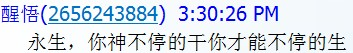
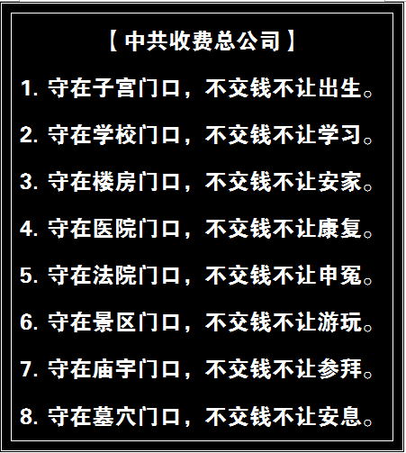
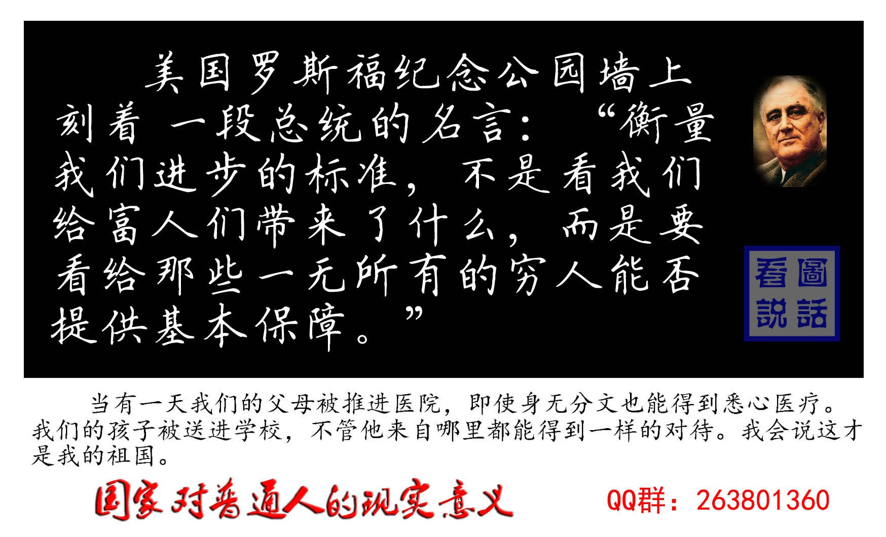

Conversation with 81184027 at Wed 14 May 2014 07:11:53 AM CST on 154115835 (webqq)
(05/14/2014 12:33:12 AM) 永生之福: 以赛亚书32:2 必有一人像避风所，和避暴雨的隐密处，又像河流在干旱之地，像大磐石的影子在疲乏之地。
(05/14/2014 12:33:12 AM) 永生之福: 以赛亚书32:2 必有一人像避风所，和避暴雨的隐密处，又像河流在干旱之地，像大磐石的影子在疲乏之地。
(07:31:57 AM) 光: 如果没有什么向我呈现，如果我不热爱，如果存在着的东西不因我的热爱而向我展开，如果我不在存在的东西里完成我的自 身，那么我就终于只落得一个像一切物质材料那样可以消逝的实存。但是因为人决不仅只是手段，而永远同时是终极目标，所以从事哲学思维的人，面对着上述的种 种可能性，在虚无的经常威胁下，总愿意体会到出之于本原的充实。 @卡尔·雅斯贝斯《生存哲学》
(07:39:47 AM) 惊弓之鸟: :强:
(07:48:55 AM) 光: :face14:
(09:40:02 AM) 蔚蓝的天空: 礼义廉耻，国之四维，四维不张，国将不国。
(09:42:24 AM) 光: 嗯
(09:47:54 AM) 蔚蓝的天空: 我们共产党不是明朝的崇祯，我们决不会腐败到那种程度。不过谁要是搞腐败那一套，我毛泽东就割谁的脑袋。我毛泽东若是搞腐败，人民就割我毛泽东的脑袋。
(09:47:55 AM) 光: “让一部分人先富起来”赌完就逃离？
为什么中国让一部分人先富裕了，他们不感谢国家和政府给他们“先富起来”的机遇，还要咒骂中国呢？这有点像民间说的，“抱养人家的儿子养不家”，你怎么养，他都是别人的孩子，和你隔着心，永远不会变为你的亲骨肉。尤其是这一部分先富起来的人目前大量移民国外，这更是需要考量当时“让一部分人先富起来”的政策对错问题。
那个“让一部分人先富起来”的政策全国人民耳朵听的烂熟，谁都知道是因为政策网开一面，让某些人利用社会当时实行的计划经济与市场“双轨制”、利用税收或者贷款中的管理漏洞、总之是利用改革开放初期的各种管理不完备的空子，利用各种各样的潜规则，造就了一大批“先富起来的人”。
如今这一批人要“逃离”了，那个叫“李剑芒”的写文章说：“全球奇观，中国富人紧急外逃”。
逃，逃离、逃跑的意思，干嘛要逃跑呢？既然是富人，按照李剑芒的话：“富人们是这个游戏规则的赢家。既然是赢家，他们当然爱这个让他们赢的规则体系，所以富人爱国是一个全球普遍的现象。~~~可中国是这个普世规律的一个非常扎眼的例外。中国的富人不爱国，他们急急忙忙地要逃离这个国家。”李剑芒还说：“赢者逃离游戏场！这种现象如何理解呢？这种现象只能有一种理解；赢者深知这个游戏场的游戏规则是一个危险的规则，这些危险的规则今天可以让他们侥幸地赢，但明天这个同样的规则就可以让他们输个精光！逃避这个潜在的输光就是他们逃离这个国家的原因。”
凤凰淑女说：赢者逃离，只能说明富人发财的过程好比赌徒，在中国改革开放这条船上利用出老千侥幸地赢了钱，怕被人发现后“倒空口袋”，于是拿了钱急急忙忙逃离。此外没有别的解释。不存在爱国还是不爱国的问题，因为此时的赌徒还没有想到“关于爱国”这么深层伟大的的话题。而且从赌徒逃离现场、成功转移出去财产后又回来，继续在此地转悠、看风向、赌钱、发财的行为上，还看不到关于爱国或者不爱国，此地这么容易发财，不爱它是不可能的！此地又这么无常，规则时常变化，不怕它翻脸也是不可能的！
李剑芒博客引用某些富人的话说：“几千万今天是我的财产，可明天还是我的吗？”因为不放心，所以要移民。
凤凰淑女说：那几千万今天是你的，怎么不问问你是怎么来的？利用政府愚蠢的潜规则赢的钱，当然怕政府再用愚蠢的潜规则拿了去。所以手拿钱袋想“见好就收”了，就想溜了，只能说钱来的太容易，钻空子暴富来的钱，自己都不放心哦。任何国家哪个地方能让一个人一夜暴富？只有中国，中国的富人大部分--或者全部，过去都是穷小子，没有经过三代、五代的积蓄，在一代以内就急剧的富裕了，并且还富裕到极致！谁个国家给你这么好的机会？只有中国。这种迅速暴富，富人自己都害怕，是不是富的太快了？ 既然是赌场赌来的钱，当然会发生“几千万今天是我的财产，可明天还是我的吗？”的问题。只要继续在赌场呆下去，就会有输有赢。想逃离现场的心态可想而知，是害怕。抱了钱赶紧躲起来吧，找个安全的地方去！所以富人要移民。这也不关系到爱国或者不爱国的内涵。
这位叫李剑芒的人文章最后有一句话是骂当今政府的：“无知的穷人好忽悠，一忽悠就瘸了！可忽悠一大帮富人，你要好好想想自己长了那根筋没有！” 文章作者看起来恶狠狠哦！貌似义正词严斥责“强权”，其实骨子里藐视穷人，替富人出气。
凤凰淑女实在看不下去斥责这个叫李剑芒的荷兰籍中国移民说：富人不是被忽悠富的，是被政府扶持富的，这个问题一定要清楚，是政府给他们机会和政策让他们富裕的。政府一直忽悠的是穷人，当然穷人还没有傻到看不出来政府和所谓的富人一起忽悠穷人的地步。比如政府卖地挣老百姓的钱，富人修房子挣老百姓的钱。只不过富人没想到，目前的政府是若干靠不住的人组成的，他们的品行其实和中国当今的富人是一样的，没有什么底线。或许政府还没想到要对付富人，因为现在政府是富人的政府。可是曾经的政府煞费苦心把过去的穷小子扶持发财了，富有了，（富有者可以扪心自问，你们是几代富？一二十年前还是穷小子呢，谁不知道谁！）穷小子现在却不买账了，拿了钱就开溜，走之前还没忘记先骂一骂让他们富裕起来的那些政府官员。只能说当时出政策让富人富裕的人眼瞎了，养了一群白眼狼，发财不感恩。还只能说他们是一路货色，相互深知对方的德行是一样的，是多么靠不住。所以你们大哥不要说二哥，都差不多。李剑芒你也不要那么恶狠狠给谁出气，好好在你的荷兰呆着去，挣这群刚刚富裕起来的没见过市面的所谓富人的钱去吧，既然有几十个人想去荷兰，你做一个中介就挣他们几百美金去。我可以肯定的说，现在逃离出去的所谓富人，并非是中国真正的脊梁。外国人看到的中国大部分先期移民也就是一群暴发户，所以才没教养，误导外国人，以为中国人都这德行。其实中国真正老实忠厚勤勤恳恳的人是无法在改革开放中投机取巧富裕发财的，一旦有机会出国也不会到处吐痰丢人现眼。
凤凰淑女
(09:48:21 AM) 光: 凤凰淑女说：赢者逃离，只能说明富人发财的过程好比赌徒，在中国改革开放这条船上利用出老千侥幸地赢了钱，怕被人发现后“倒空口袋”，于是拿了钱急急忙忙逃离。此外没有别的解释。不存在爱国还是不爱国的问题，因为此时的赌徒还没有想到“关于爱国”这么深层伟大的的话题。
(09:49:17 AM) 光: 凤凰淑女说：那几千万今天是你的，怎么不问问你是怎么来的？利用政府愚蠢的潜规则赢的钱，当然怕政府再用愚蠢的潜规则拿了去。所以手拿钱袋想“见好就收”了，就想溜了，只能说钱来的太容易，钻空子暴富来的钱，自己都不放心哦。任何国家哪个地方能让一个人一夜暴富？只有中国，中国的富人大部分--或者全部，过去都是穷小子，没有经过三代、五代的积蓄，在一代以内就急剧的富裕了，并且还富裕到极致！谁个国家给你这么好的机会？只有中国。这种迅速暴富，富人自己都害怕，是不是富的太快了？ 既然是赌场赌来的钱，当然会发生“几千万今天是我的财产，可明天还是我的吗？”的问题。只要继续在赌场呆下去，就会有输有赢。想逃离现场的心态可想而知，是害怕。抱了钱赶紧躲起来吧，找个安全的地方去！所以富人要移民。这也不关系到爱国或者不爱国的内涵。
(09:50:42 AM) lost message from #97849 to #97854
(09:50:52 AM) 蔚蓝的天空: 让一批人先富起来 如今扶起来的那批人 吃完奶了还骂娘
(09:50:56 AM) 光: http://blog.ifeng.com/article/15273662.html
(09:51:55 AM) 光: (08:57:00 AM) 北大-魏高原: 小杜的问题很好！答案已经在我下面的文字里：我不是国师但肯定是一位逻辑师或逻辑思维训练师，请欣赏本人最新高论：【 既然可以“一部分人先富”，为何不可以“一部分基层先直选”？】～～～先富而不直选最终还连人带款奔民主国家，先民主而不富可是既无脸面更无资格外逃或移民？要出走也只能去非洲援建？
(09:52:06 AM) 光: 既然可以“一部分人先富”，为何不可以“一部分基层先直选”？
(09:54:12 AM) 光: 某种意义上 ，赵维山也是一部分人先富起来的代表，这个口号的受益者
(09:54:35 AM) 蔚蓝的天空: 呵呵
(09:54:31 AM) 光: :face14:
(09:55:25 AM) 蔚蓝的天空: 有时候觉得赵维山也有他存在的道理
(09:55:40 AM) 光: 嗯
(09:57:25 AM) 光: (09:56:56 AM) 4278396550 #(broken)# Angelife.org读书会①: 这群有浙江地区的朋友吗
(09:57:03 AM) 光: 有
(09:57:56 AM) 4278396550: 哦
(09:58:35 AM) 蔚蓝的天空: 虽然觉得全能很可恨 可是他为什么发展如此迅速 而且存在二十几年
(09:59:04 AM) 安徽-市区&钟馗: 所言甚是。
(09:59:20 AM) 蔚蓝的天空: 难道仅仅是全能的信徒愚昧无知吗
(09:59:30 AM) 蔚蓝的天空: 我想不是
(09:59:59 AM) 安徽-市区&钟馗: 纵容使然！
(10:01:47 AM) 蔚蓝的天空: 我觉得这个问题那些拿着纳税人的官老爷们要反思一下
(10:02:06 AM) 安徽-市区&钟馗: 它们是事不关己，高高挂起。
(10:02:36 AM) lost message from #97873 to #97873
(10:02:46 AM) 杰克；狼人: 小贩与青年
【说地】
天一直下雨，路边几个卖吃食的小贩一直没啥生意。到中午，卖烧饼的大概是饿了，就吃了一块自烤的大饼，反正也卖不出去。卖西瓜的感到无聊，就敲开西瓜吃了。卖辣椒干的也开始吃起了辣椒干。卖杨梅的只好吃杨梅了。
雨不停地下，四个小贩不停地吃。后来卖烧饼的吃得快渴死了：卖西瓜的吃得快胀死了；卖杨梅的吃得快酸死了：卖辣椒干的吃得快辣死了。
这时，从雨中走来四个青年，各人分别向他们买了四样东西，然后围着坐在附近亭子里嘻嘻哈哈的吃起来，有甜、有辣、有酸、也有香，吃得有滋有味!
【谈天】
这就是“分享”。把欢笑分享给人可得到双倍的欢笑，把忧愁分给人，可以减去一半的忧愁。
【经文】
箴11:24“有施散的，却更增添，有吝惜过度的，反致穷乏。”
#微看圣经#
(10:06:19 AM) 蔚蓝的天空: 如果反邪的标语 也想当年计划生育标语一样 可能会有很的作用
(10:06:51 AM) 蔚蓝的天空: 很大的作用
(10:06:55 AM) 福建-福州&水浒: ～～
(10:10:15 AM) 4278396550: 只要是存在的东西，那就一定是有合理性的
(10:10:29 AM) 福建-福州&水浒: 只要是存在的东西，那就一定是有合理性的
(10:10:39 AM) 福建-福州&水浒: 值得深思
(10:11:28 AM) 4278396550: 是的
(10:13:21 AM) 蔚蓝的天空: 时间会验证 先不要否定
(10:14:12 AM) 4278396550: 存在是需要技巧和办法，但是当技巧和办法都不通的时候，那要么就是灭亡，要么就是淘汰
(10:21:15 AM) 醒悟: 邪教与流氓差不多，流氓不听打杀。全能也一样不须服雷劈死。流氓之间有种假义气，全能有假爱
(10:22:31 AM) 醒悟: 所以当流氓，信全能的自己觉的很快乐
(10:26:41 AM) 安徽-市区&钟馗: :强:
(10:35:24 AM) 蔚蓝的天空: 全能现在是中国最大民营企业
(10:36:08 AM) 阿萨汗蛋包飯: 表面上的民营企业，实际上美资控股
(10:36:25 AM) 阿萨汗蛋包飯: 网站和总部位于美利坚合众国纽约市
(10:37:37 AM) 安徽-市区&钟馗: 是的。这种民营企业不要也罢。
(10:38:06 AM) 蔚蓝的天空: 不过全能现在已经在美国上市
(10:38:23 AM) 阿萨汗蛋包飯: 确实在美国上市了
(10:38:32 AM) 安徽-市区&钟馗: 但愿能够对美国构成杀伤。
(10:38:34 AM) 阿萨汗蛋包飯: 而且还发传单。书籍也英文版了
(10:38:41 AM) 蔚蓝的天空: 大肆敛取中国底层人民的钱财
(10:38:50 AM) 安徽-市区&钟馗: 是的。
(10:39:05 AM) 安徽-市区&钟馗: 我们都已经变得一穷二白了。
(10:39:25 AM) 蔚蓝的天空: 中共当初是打土豪分田地
(10:55:41 AM) 醒悟: 有意思在美国发杨光大就好啦
(10:57:03 AM) 醒悟: 被骗钱的出来说说
(11:00:57 AM) 蔚蓝的天空: 如果赵维山 把美元都骗到中国来 那就立功了
(11:01:29 AM) 自力: 是的
(11:09:26 AM) 蔚蓝的天空: 如果赵维山的全能能把美国搞乱 那他就是民族英雄了、
(11:10:20 AM) 蔚蓝的天空: 可惜赵大神却把自己的小聪明 用到了自己的父老乡亲身上
(11:11:35 AM) 阿萨汗蛋包飯: 把美国搞乱。把总统就职按的神经换成那本邪书那才是本事
(11:11:49 AM) 阿萨汗蛋包飯: 把总统就职按的圣经换成那本邪书那才是本事
(11:16:17 AM) 蔚蓝的天空: 是的
(11:16:41 AM) 蔚蓝的天空: 吧圣经换成 话在肉身显现
(11:16:44 AM) 蔚蓝的天空: 呵呵
(11:17:12 AM) 阿萨汗蛋包飯: 话在肉身显现，如果被美国总统就职典礼按住了，那才是牛逼
(11:17:19 AM) 阿萨汗蛋包飯: 圣经的权威永垂不朽啊
(11:19:45 AM) 自力: 信佛
(11:19:47 AM) 自力: 新因果
(11:19:50 AM) 自力: 信因果
(11:39:01 AM) 醒悟: 流氓会什么果报啊:)
(11:39:46 AM) 醒悟: 全能教有何果报啊!
(11:41:24 AM) 醒悟: 小日本何果报啊!
(11:41:47 AM) 阿萨汗蛋包飯: 小日本会吸收并改良变成黑社会
(11:42:18 AM) 阿萨汗蛋包飯: 任何事物被日本人吸收都要进行改良
(11:42:52 AM) 醒悟: 人民变良民:D
(11:44:12 AM) 醒悟: 上帝被冒名屁有不放一个!不知他老人家在忙啥
(11:45:06 AM) 阿萨汗蛋包飯: 佛教进入日本被改良僧人可以结婚。道教进入日本变成武士道，全能神进入日本绝对是黑社会
(11:46:31 AM) 醒悟: 道教与武士道没关系
(11:46:53 AM) 醒悟: 中国佛教现在也可以结婚
(11:49:20 AM) 醒悟: 日本人啥到东西都叫道!空手道，茶道，他们最爱阴道
(11:53:35 AM) 自力: ，，
(12:14:56 PM) 蔚蓝的天空: 不要谈论不相干的话题
(12:15:11 PM) 蔚蓝的天空: 难道其他国家不爱
(12:20:17 PM) 光: 眼不见为净
(12:20:24 PM) 光: 又被踢了
(12:20:42 PM) lost message from #97931 to #97931
(12:20:52 PM) 反邪★石家庄: 看到了
(12:20:52 PM) 醒悟: :D
(12:21:22 PM) 醒悟: 看到什么带我去看看
(12:21:37 PM) 光: 自由是既要允许自己说话，也要允许别人说话
(12:22:10 PM) 光: 观点相左就踢人
(12:22:21 PM) 光: 这成什么了
(12:22:45 PM) 光: 到头来没有创新只有抄袭
(12:23:29 PM) 醒悟: 跑那儿去了邪群
(12:23:24 PM) 光: 同盟会
(12:23:37 PM) 光: 联盟有病
(12:23:41 PM) 光: 同盟也有病了
(12:23:48 PM) 光: 疯牛病
(12:25:25 PM) 光: 最后搞的都是新宿老仙的门人
(12:25:34 PM) 光: 星宿老仙
(12:28:12 PM) 蔚蓝的天空: 怎么回事光
(12:28:21 PM) 蔚蓝的天空: 你从联盟退群了
(12:28:11 PM) 光: 揭短了呗
(12:28:15 PM) 光: 被踢了
(12:28:33 PM) 蔚蓝的天空: 哦
(12:28:26 PM) 光: 有人想做神
(12:28:31 PM) 光: 我说他什么都不是
(12:28:41 PM) 光: 刺激了
(12:29:12 PM) 蔚蓝的天空: 是管理员踢的吗
(12:29:05 PM) 光: 嗯
(12:29:08 PM) 光: 估计是老鹰
(12:29:33 PM) 蔚蓝的天空: 管理员不是 严寒吗
(12:29:31 PM) 光: 群管也有权利的
(12:29:43 PM) 光: 这老鹰虚荣心很强
(12:30:11 PM) 光: 生活中没有什么权利
(12:30:21 PM) 光: 只能在网络世界找平衡
(12:30:39 PM) 光: 可以理解
(12:31:43 PM) 蔚蓝的天空: 哦
(12:31:42 PM) 光: 这也是我们中国人的问题
(12:31:50 PM) 光: 大多数人一旦有了权利
(12:31:55 PM) 光: 就会滥用
(12:32:06 PM) 光: 没权利的死后
(12:32:08 PM) 光: 事后
(12:32:16 PM) 光: 人还没有什么大毛病
(12:32:22 PM) 光: 有了权力就扭曲了
(12:32:59 PM) 光: 说到底，自己想当地主，想当神
(12:33:16 PM) 蔚蓝的天空: 是的 谁有权力都会变得
(12:33:12 PM) 光: 魔戒
(12:33:34 PM) 蔚蓝的天空: 我看你在联盟收到了共计
(12:33:44 PM) 蔚蓝的天空: 攻击
(12:33:37 PM) 光: 嗯
(12:34:16 PM) 光: 褪掉权力的光环
(12:34:24 PM) 光: 他就是一个普通人
(12:34:37 PM) 醒悟: 新宿老仙??
(12:34:36 PM) 光: 星宿老仙法力无边
(12:34:52 PM) 光: 法螺吹的震天响
(12:35:14 PM) 醒悟: 没听过
(12:35:07 PM) 光: 参见天龙八部
(12:36:24 PM) 光: 你要是拿掉他的权力他就会疯
(12:36:37 PM) 光: 给他权力他就会滥用
(12:37:24 PM) 蔚蓝的天空: 那个群已经没有存在的必要了
(12:37:31 PM) 蔚蓝的天空: 没什么用
(12:37:25 PM) 光: 这就是为什么我们要把权力关在笼子里
(12:37:45 PM) 蔚蓝的天空: 除了牢骚 找不到别的东西
(12:37:36 PM) 光: 有迷惑性
(01:03:31 PM) 光: 星宿派位於青海省的星宿海，其弟子輩分的排法與眾不同，其他門派是以入門順序或年齡作排列，但星宿派是以武功高低作排名，弟子們若自認為自己武功可打敗大師兄或大師姐，隨時可以向他或她挑戰，如果贏了，即可代替他原本的地位，但是輸了的話，有可能連性命都不保。
此外，星宿派門人都要會說一些阿諛奉承的話來諂媚掌門人丁春秋，這是因為丁春秋愛好他人的奉承之語，故星宿派門人都要會說這類奉承的話，否則人頭大概就和身體分家了。
另外，阿諛的風氣也影響其門下弟子，這點由阿紫和摘星子的挑戰可看出。
星宿海深深的躲在荒原的綠洲裡，常年的雨水積累成湖。
星宿派並非存在於大宋領土之上，而是靠著自己的力量頑強的在塞外生存著。
這是一個由不臣服於西夏的漢人邊民組成的草民力量，丁春秋把這個力量發展成為一個最強大的門派之一，所以在星宿裡，不該有人不認為丁春秋就是神。
(01:19:00 PM) 光: 丁春秋殺害玄痛、玄難二僧，乃少林派大仇。少林群僧聽說他到了少室山上，登時便鼓噪起來。玄生大呼："今日須當人人奮勇，活捉丁老怪，為玄難、玄痛兩位師兄報仇。"
玄慈朗聲道："遠來是客，咱們先禮後兵。"群僧齊道："是。"玄慈又道："眾位師兄，眾位朋友，大家便出去瞧瞧星宿派和慕容氏的高招如何？"
群雄早已心癢難搔，正在等他這句話。輩份較低、性子急的青年英豪一窩蜂的奔了出去。跟著四大噁心、各路好漢、大理國段氏、諸寺高僧，紛紛快步而出。但聽得乒乓嗆啷之聲不絕，慧字輩的少林僧將師父、師伯叔的兵刃送了出來。
玄慧虛空四代少林僧各執兵刃，列隊出寺。剛到山門門口，派在半山守望的僧 人便奔來報訊："星宿派徒眾千餘人，在半山亭中將慕容公子等團團圍住，惡鬥不休。"玄慈點了點頭，走到石板路上向山下望去，但見黑壓壓的都是人頭，只怕尚不足千餘之數。
呼喝之聲，隨風飄下山來："星宿老仙今日親自督戰，自然百戰百勝！""你們幾個幺魔小丑，竟敢頑抗老仙，今真大膽之極！""快快拋下兵刃，哀求星宿老仙饒命！""星宿老仙邕臨少室山，小指頭兒一點，少林寺立即塌倒。"
新入星宿派的門人，未學本領，先學諂諛師父之術，千餘人頌聲盈耳，少室山上一片歌功頌德。少林寺建剎千載，歷代群僧所念的"南無阿彌陀佛"之聲，千年總和，說不定遠不及此刻星宿派眾門人對師父的頌聲洋洋如沸。丁春秋捋著白須，瞇起了雙眼，薰薰然，飄飄然，有如飽醉醇酒。
玄生氣運丹田，大聲叫道："結羅漢大陣！"五百名僧眾應道："結羅漢大陣！"紅衣閃動，灰影翻滾，五百名僧眾東一簇、西一隊，漫山遍野散了開來。
群雄久聞少林派羅漢大陣之名，但一百多年來，少林派從未在外人之前施展過，除了本寺僧人之外，誰也未曾得見。這裡但見群僧衣帽分色，或紅或灰，或黃或黑；兵刃不同，或刀或俞，或杖或鏟，人人奔跑如飛，頃刻間便將星宿派門人圍在核心。
星宿派人數遠較少林僧 為多，但大多數是新收的烏合之眾，單獨接戰，多少也各自有點兒技藝。這等列陣合戰的陣仗，卻從來沒經歷過，不由得都慌了手腳，歌頌星宿老仙的聲音也不免大大減弱，不少人默不作聲，心中暗打改而歌頌"少林聖僧"的主意。
(01:19:28 PM) 光: 新入星宿派的門人，未學本領，先學諂諛師父之術，千餘人頌聲盈耳，少室山上一片歌功頌德。少林寺建剎千載，歷代群僧所念的"南無阿彌陀佛"之聲，千年總和，說不定遠不及此刻星宿派眾門人對師父的頌聲洋洋如沸。丁春秋捋著白須，瞇起了雙眼，薰薰然，飄飄然，有如飽醉醇酒。
(01:28:36 PM) lost message from #97993 to #97995
(01:28:47 PM) 醒悟: 邪教离家出走的占百之几
(01:29:21 PM) 永生之福: 约翰福音24:49 我要将我父所应许的降在你们身上。你们要在城里等候，直到你们领受从上头来的能力。
(01:33:52 PM) 光: (01:28:47 PM) 醒悟: 邪教离家出走的占百之几 //自从有了联盟这个问题才激化的
(01:34:14 PM) 光: 最初他们是打算收费的
(01:34:20 PM) 光: 发一个信息100元
(01:34:27 PM) 光: 被我骂了
(01:34:41 PM) 光: 不知道现在是否在暗箱操作
(01:35:12 PM) 蔚蓝的天空: 是吗
(01:35:04 PM) 光: 嗯
(01:35:25 PM) 蔚蓝的天空: 你是说群里收费
(01:35:16 PM) 光: 他刚建立的时候
(01:35:21 PM) 光: 寻亲网
(01:35:37 PM) 蔚蓝的天空: 怎么可能
(01:35:32 PM) 光: 很早了
(01:35:40 PM) 光: 刚建立的时候
(01:35:46 PM) 光: 就做假信息
(01:35:54 PM) 光: 当时我没有把他们当回事
(01:36:04 PM) 光: 我认为作假的么
(01:36:16 PM) 蔚蓝的天空: 这不是公义的事情 怎么还能收费
(01:36:07 PM) 光: 怎么可能做大
(01:36:27 PM) 光: 事实证明我低估他们了
(01:36:55 PM) 光: 真公益
(01:37:00 PM) 光: 是不会有欺骗的
(01:37:13 PM) 蔚蓝的天空: 光你说的是真的吗
(01:37:05 PM) 光: 嗯
(01:37:16 PM) 光: 刚建立的时候我就去看了
(01:37:26 PM) 光: 信息一开始都是假的
(01:37:43 PM) 光: 我还在群里笑话他们
(01:38:30 PM) 蔚蓝的天空: 可是为什么没有收费呢
(01:38:30 PM) 光: 我说他了
(01:38:43 PM) 光: 表面上他不能这样了
(01:38:50 PM) 光: 背后就不知道了
(01:39:17 PM) 光: 真公益是不可能有欺骗的
(01:39:27 PM) 光: 有欺骗不可能是真公益
(01:39:55 PM) 蔚蓝的天空: 不管怎样 还是打着反全能的大旗
(01:39:48 PM) 光: 就好比不讲道德的人
(01:39:54 PM) 光: 说自己做公益
(01:39:57 PM) 光: 你信么
(01:40:44 PM) 光: 连诚信都做不到
(01:41:51 PM) 蔚蓝的天空: 光 你不会是因为他们把你踢出 才这样说的吧
(01:41:45 PM) 光: 不会
(01:41:53 PM) 光: 我一直这么说
(01:42:04 PM) 4278396550: 貌似就你们两个一直在聊
(01:42:19 PM) 光: 从11年到现在了
(01:42:29 PM) 光: 09年离开也是因为这个
(01:43:04 PM) 光: 他们都换了好几个核心人物了
(01:43:19 PM) 光: 现在浮在表面的
(01:43:21 PM) 福建-福州&水浒: ？
(01:43:24 PM) 光: 都是新人新面孔
(01:43:25 PM) lost message from #98044 to #98044
(01:43:36 PM) 蔚蓝的天空: 不是我们一直在聊
(01:43:46 PM) 福建-福州&水浒: 12年的事情我不知
(01:43:37 PM) 光: 每个时期都有这样的
(01:43:49 PM) 蔚蓝的天空: 只是觉得光的观点 还是可以的
(01:44:02 PM) 福建-福州&水浒: 那时候我在反邪一线
(01:43:53 PM) 光: 最有问题的人潜伏着
(01:43:56 PM) 光: 嗯
(01:44:12 PM) 蔚蓝的天空: 群里鱼龙混杂
(01:44:03 PM) 光: 灭神不是最有问题的
(01:44:32 PM) 福建-福州&水浒: 直接面对信徒，不是靠任何人
(01:44:22 PM) 光: 可能这个人我还很熟悉
(01:44:35 PM) 光: 他不肯路面
(01:44:55 PM) 蔚蓝的天空: 光 你有什么有力的证据吗
(01:44:50 PM) 光: 我一直好奇
(01:45:00 PM) 光: 我的计划书是怎么流出去的
(01:45:14 PM) 福建-福州&水浒: 好奇什么？
(01:45:10 PM) 光: 09年的计划书
(01:45:17 PM) 光: 11年的时候风说他看过
(01:45:51 PM) 光: 当时我只给5个人看过
(01:46:22 PM) 光: 这里有一个人
(01:46:34 PM) 福建-福州&水浒: 反正联盟一些人靠卖受害人反邪提供的信息，获取利益那是不争的事实
(01:46:34 PM) 蔚蓝的天空: 你是说 网站里的指导书 是出自你手
(01:46:27 PM) 光: 肖申克
(01:46:34 PM) 光: 这个人如果肯说
(01:46:40 PM) 光: 就可以知道另一半我不知道的事情
(01:47:07 PM) 光: 这个水很深
(01:47:12 PM) 光: 一般人看不清
(01:48:05 PM) 光: 前提这个人不说谎
(01:48:45 PM) 蔚蓝的天空: 这个就很难证实了
(01:48:39 PM) 光: 能
(01:48:49 PM) 光: 常识和推理还是能证明他们有问题的
(01:48:57 PM) 光: 即使线索有限
(01:49:14 PM) 蔚蓝的天空: 你现在是说群有问题吗
(01:49:28 PM) 蔚蓝的天空: 还是网站有问题
(01:49:45 PM) 蔚蓝的天空: 可是受害者家属 找到就是那个网站、
(01:49:38 PM) 光: 都有问题
(01:49:55 PM) 蔚蓝的天空: 他覆盖很广
(01:49:52 PM) 光: 喊口号就有问题
(01:49:58 PM) 光: 口号人人会喊
(01:50:16 PM) 蔚蓝的天空: 那是唯一能找到反全能的网站
(01:50:13 PM) 光: 对
(01:50:18 PM) 光: 为什么这个是唯一
(01:50:30 PM) 蔚蓝的天空: 那你什么具体的办法吗
(01:50:25 PM) 光: 不是最早
(01:50:31 PM) 光: 确实唯一的
(01:50:33 PM) 光: 却是
(01:50:39 PM) 光: 很滑稽不是么
(01:51:02 PM) 蔚蓝的天空: 那怎么办
(01:51:04 PM) 光: 不知道
(01:51:18 PM) 蔚蓝的天空: 你有什么对策
(01:51:19 PM) 福建-福州&水浒: 唯一那是因为有背后力量推进
(01:51:12 PM) 光: 嗯
(01:51:33 PM) 福建-福州&水浒: 不奇怪
(01:51:40 PM) 蔚蓝的天空: 你现在把你的观点说出来 我发到那个群里
(01:51:49 PM) 福建-福州&水浒: 有人反邪也有人造谣有什么奇怪的呢
(01:51:38 PM) 光: 不用
(01:51:43 PM) 光: 我的观点他们都知道
(01:51:57 PM) 福建-福州&水浒: 这就是反邪的难处
(01:51:59 PM) 蔚蓝的天空: 那怎么办
(01:51:58 PM) 光: 差异化
(01:52:22 PM) 蔚蓝的天空: 看来我要退群了
(01:52:15 PM) 光: 不用
(01:52:22 PM) 光: 你可以继续观察
(01:52:50 PM) 蔚蓝的天空: 光 这个群里安全吗
(01:52:55 PM) 4278396550: 蔚蓝的天空 你在哪个邪教群？
(01:53:05 PM) 蔚蓝的天空: 这个群有问题吗
(01:52:55 PM) 光: 不知道
(01:53:00 PM) 光: 应该也有邪教的
(01:53:07 PM) 光: 最早我就是在这里说
(01:53:25 PM) 4278396550: 告诉我 我去看看
(01:53:17 PM) 光: 慢慢的他们那边就开始建立起来了
(01:53:31 PM) 蔚蓝的天空: 就是 反全能联盟总群
(01:53:47 PM) 蔚蓝的天空: 你百度就可以找到
(01:53:57 PM) 蔚蓝的天空: 白云
(01:53:49 PM) 光: 然后拼命的宣传
(01:54:24 PM) 蔚蓝的天空: 257651024
(01:54:15 PM) 光: 口号也大的吓人
(01:54:37 PM) 光: 我这里说恢复率不高
(01:54:52 PM) 蔚蓝的天空: 先竖起 替天行道的大旗
(01:54:48 PM) 光: 他们哪里就说恢复率百分之90多
(01:55:07 PM) 光: 这就是他们的风格
(01:55:25 PM) 蔚蓝的天空: 什么回复率
(01:55:19 PM) 光: 退教率
(01:55:25 PM) 光: 康复率
(01:55:35 PM) 福建-福州&水浒: 成功率百分90
(01:55:27 PM) 光: 嗯
(01:55:33 PM) 光: 按照他们的逻辑
(01:55:39 PM) 光: 群里就没有受害者了
(01:55:43 PM) 光: 没有抱怨了
(01:55:45 PM) lost message from #98133 to #98133
(01:55:55 PM) 福建-福州&水浒: 撒子才信？
(01:55:51 PM) 光: 事实呢
(01:56:04 PM) 蔚蓝的天空: 你是说邪教徒的恢复
(01:55:56 PM) 光: 嗯
(01:56:14 PM) 福建-福州&水浒: 没有那么乐观
(01:56:07 PM) 光: 是啊
(01:56:20 PM) 蔚蓝的天空: 你认为能恢复多少
(01:56:13 PM) 光: 就是先骗人上船
(01:56:15 PM) 光: 再说
(01:56:21 PM) 光: 一起抱怨
(01:56:33 PM) 福建-福州&水浒: 你直接面对信徒就知道了
(01:56:28 PM) 光: 嗯
(01:56:34 PM) lost message from #98145 to #98145
(01:56:45 PM) 福建-福州&水浒: 我问过国保人员
(01:56:35 PM) 光: 没那么高的
(01:56:51 PM) 4278396550: 那个群就是全能神教吧
(01:56:53 PM) 福建-福州&水浒: 成功率的问题
(01:57:05 PM) 蔚蓝的天空: 是吗 白云
(01:57:10 PM) 福建-福州&水浒: 他的表情是一笑而过
(01:57:20 PM) 蔚蓝的天空: 你说是全能交群
(01:57:15 PM) 光: 而且我这边说了
(01:57:21 PM) 光: 她那边就有了成功率了
(01:57:32 PM) 永生之福: 昨晚，我又看到神奇的事了。我对他说：主啊，拉我的手。我把手伸过去，我看到从我的手、小臂，飞出许多脏东西和小飞虫。／／感谢主洁净我。阿门
(01:57:33 PM) 4278396550: 感觉
(01:57:29 PM) 光: 在你们看没啥
(01:57:35 PM) 光: 我这里看就问题很大了
(01:57:55 PM) 蔚蓝的天空: 你怎么看
(01:58:05 PM) 蔚蓝的天空: 你说有问题
(01:57:56 PM) 光: 你看灭神的性格啊
(01:58:03 PM) 光: 是正经人么
(01:58:14 PM) 蔚蓝的天空: 可是总要有证据
(01:58:10 PM) 光: 证据太多了
(01:58:21 PM) 福建-福州&水浒: 脾气不好
(01:58:26 PM) 福建-福州&水浒: 那是确实滴
(01:58:26 PM) 光: 你自己去观察
(01:58:47 PM) 光: 怀疑精神就是科学精神
(01:59:03 PM) 福建-福州&水浒: 是受害人，不过背地里干什么事就不知道了
(01:58:57 PM) 光: 嗯
(01:59:10 PM) 福建-福州&水浒: 人都有两年性
(01:59:11 PM) 蔚蓝的天空: 那里面已经有国保的人了
(01:59:22 PM) 福建-福州&水浒: 首先灭神是受害人
(01:59:12 PM) 光: 自己去观察
(01:59:29 PM) 福建-福州&水浒: 这是事实
(01:59:22 PM) 光: 怎么证明
(01:59:52 PM) 蔚蓝的天空: 你在问我 光
(01:59:58 PM) 光: (01:59:22 PM) 福建-福州&水浒: 首先灭神是受害人 //怎么证明
(02:00:14 PM) 福建-福州&水浒: 当然有人证明了，背后里怎么搞那就是有问题了
(02:00:25 PM) 光: 那个证明他的人，又有谁能证明
(02:00:41 PM) 福建-福州&水浒: 不能证明我也不得乱说
(02:00:53 PM) 蔚蓝的天空: 没有证据
(02:00:50 PM) 光: 要知道
(02:00:52 PM) 光: 这个问题
(02:01:04 PM) 蔚蓝的天空: 不能往下结论
(02:00:55 PM) 光: 从09年就有了
(02:01:12 PM) 蔚蓝的天空: 证据
(02:01:03 PM) 光: 有足够的时间潜伏
(02:01:27 PM) 光: 我09年介入的
(02:01:39 PM) 福建-福州&水浒: 人可以随时间而改变
(02:01:39 PM) 光: 在之前应该也有
(02:01:41 PM) lost message from #98191 to #98191
(02:01:51 PM) 醒悟: 他们能挣钱?
(02:01:56 PM) 光: 绝对不是12年才有
(02:02:04 PM) 光: 那太低估了
(02:02:16 PM) 醒悟: 怎么挣法?
(02:02:26 PM) 光: 第一是视频造假
(02:02:36 PM) 光: @蔚蓝的天空
(02:02:46 PM) 光: 这个是我们群里的老群友
(02:02:50 PM) 光: 清心发现的
(02:02:54 PM) 光: 本来我也没发现
(02:03:06 PM) 光: 他比我细心
(02:03:45 PM) 蔚蓝的天空: 哦
(02:04:04 PM) 蔚蓝的天空: 你说网站里视频有造假
(02:04:24 PM) 蔚蓝的天空: 之前你还推荐我看指导书
(02:04:27 PM) 福建-福州&水浒: 看到了么，光
(02:04:57 PM) 蔚蓝的天空: 看到什么
(02:05:27 PM) 蔚蓝的天空: 上午 他们怀疑我在群里和 光 唱双簧
(02:05:25 PM) 光: http://tv.sohu.com/20121218/n360752695.shtml
(02:05:40 PM) 醒悟: 他信息能卖钱?
(02:05:30 PM) 光: 这个
(02:05:37 PM) 光: 联盟出品
(02:05:54 PM) 福建-福州&水浒: 心正不怕邪
(02:06:25 PM) 福建-福州&水浒: 少数人观点得不到认同很正常
(02:06:28 PM) 永生之福: 逼供，是他们的长项。:eyes:
(02:06:18 PM) 光: 嗯
(02:06:25 PM) 光: 对口型的
(02:07:12 PM) 光: 现在你看不多了
(02:07:27 PM) 醒悟: 卖给谁呐?
(02:07:19 PM) 光: 当初基本上被传的很疯
(02:07:45 PM) 福建-福州&水浒: 光的退教很适合被开除之信徒，不过那几条分细致点就靠生活的细节去实行
(02:07:41 PM) 光: 说明有人在洗底
(02:07:52 PM) 福建-福州&水浒: 反正就是长期的过程
(02:07:50 PM) lost message from #98222 to #98222
(02:08:01 PM) 蔚蓝的天空: 这个视频之前不是央视的吗
(02:07:54 PM) 光: 假的
(02:07:58 PM) 光: 细心一些
(02:08:05 PM) 光: 看看口型和声音
(02:08:26 PM) 蔚蓝的天空: 我看出来了
(02:08:29 PM) 醒悟: 看过不少人说假
(02:08:19 PM) 光: 大多数人很粗心
(02:08:40 PM) 蔚蓝的天空: 的确做过手脚
(02:08:32 PM) 光: 信以为真的不少
(02:08:35 PM) 光: 第二个
(02:08:41 PM) 光: 假的赵维山信息
(02:08:55 PM) 福建-福州&水浒: 语言很官方
(02:08:46 PM) 光: 和女基督信息
(02:09:06 PM) 蔚蓝的天空: 可是 之前央视确实有这样的视频
(02:08:56 PM) 光: 也是联盟出品
(02:09:07 PM) 光: 不要引伸
(02:09:11 PM) 光: 就事论事
(02:09:23 PM) 福建-福州&水浒: 不觉得那个犯人的言语很百度么
(02:09:14 PM) 光: 这个是假的
(02:09:35 PM) 阿萨汗蛋包飯: 央视
(02:09:44 PM) 阿萨汗蛋包飯: 央视？很假
(02:10:14 PM) 光: ZT：赵维山参观上海世博会参观回忆录（组图）. (n.d.). Retrieved December 28, 2013, from http://www.xys.org/forum/db/10/184/11.html
(02:10:22 PM) 光: 这个
(02:10:34 PM) 蔚蓝的天空: 什么都假
(02:10:27 PM) 光: 嗯
(02:10:35 PM) 光: 灭神的风格
(02:10:39 PM) 光: 就是作假
(02:11:16 PM) 光: QQ 上有他們的人嗎?-网站论坛--反全能神联盟. (n.d.). Retrieved April 2, 2014, from http://fqnslm.com/bbs/dispbbs.asp?id=908
(02:11:22 PM) 光: 这个是IP作假
(02:11:32 PM) 光: 192.168. 这个是局域网地址
(02:11:49 PM) 光: 还有很多假
(02:11:53 PM) 光: 细心一些都能发现
(02:12:28 PM) 光: 我想问一下
(02:12:34 PM) 光: 做这么多假做什么
(02:12:39 PM) 光: 一做再做
(02:12:44 PM) 光: 尝到甜头了
(02:13:08 PM) 蔚蓝的天空: 可是 她的确是在反全能
(02:13:32 PM) 蔚蓝的天空: 尽管是假的 但是他说的都是全能的坏话
(02:13:35 PM) 醒悟: 有什么好处呢?
(02:13:39 PM) 光: 嗯
(02:13:41 PM) 光: 12年
(02:13:45 PM) 光: 我在群里
(02:13:46 PM) 光: 说过
(02:14:03 PM) 光: 当时我举了一个U形磁铁的
(02:14:06 PM) 光: 例子
(02:14:11 PM) 光: 问大家看到了什么
(02:15:31 PM) 阿萨汗蛋包飯:
(02:15:21 PM) 光: http://www.soutiku.com/tiku/images/questions/201111/30/7a8a36cb.png
(02:15:24 PM) 光: 类似这个图
(02:16:58 PM) 醒悟: 邪教离婚听说大多净身出户是这样吗
(02:18:05 PM) 光: 我记得@ISTj-花非花 @상상무한 等应该都回答过
(02:18:37 PM) 光: 大家也可以再想想
(02:18:49 PM) 光: 当时他们喊打喊的很凶
(02:19:04 PM) 光: 离家出走的受益者是谁啊
(02:19:13 PM) 光: 我的建议不是今天才有
(02:19:17 PM) 光: 而是一直都是这样
(02:19:46 PM) 阿萨汗蛋包飯: 受益者是全能教
(02:19:40 PM) 光: 对啊
(02:19:52 PM) 阿萨汗蛋包飯: 是赵教主
(02:19:55 PM) 光: U型磁铁
(02:20:03 PM) 光: 一体两面
(02:22:10 PM) 光: 如果我的建议是错的
(02:22:14 PM) 光: 因为我换才对啊
(02:22:18 PM) 光: 为什么一直都是他们换
(02:26:58 PM) 阿萨汗蛋包飯: 旧约，以赛亚书，“外人将接管那些未能侍奉神的土地。”
(02:32:45 PM) 安徽-市区&钟馗: http://forum.china.com.cn/forum.php?mod=viewthread&tid=3648380&extra=page%3D1%26filter%3Dtypeid%26typeid%3D850%26typeid%3D850
(02:33:32 PM) 蔚蓝的天空: 说些没用的
(02:34:51 PM) 福建-福州&水浒: @蔚蓝的天空 留言么？
(03:04:40 PM) 蔚蓝的天空: 留言？
(03:05:26 PM) 福建-福州&水浒: http://forum.china.com.cn/forum.php?mod=viewthread&tid=3648380&extra=page%3D1%26filter%3Dtypeid%26typeid%3D850%26typeid%3D850
(03:05:42 PM) 福建-福州&水浒: 留言～～～
(03:07:30 PM) 蔚蓝的天空: 留了
(03:08:12 PM) 阿萨汗蛋包飯: :强:
(03:08:36 PM) 福建-福州&水浒: 我没留言
(03:10:21 PM) 蔚蓝的天空: 全能邪教 已经遍布乡村 敛取钱财 扰乱百姓正常生活 请求政府严厉打击 肃清全能邪教 共产党万岁
(03:11:58 PM) 福建-福州&水浒: 共产党万岁万岁万万岁！中国人民易碎易碎易易碎
(03:12:18 PM) 永生之福: 共产党失去民心，被别派吸收不是正常的吗？
(03:12:21 PM) 福建-福州&水浒: 反差太大了，受不了
(03:12:49 PM) 蔚蓝的天空: 什么反差大
(03:15:07 PM) 永生之福: 早知现在，何必当初？领导就是神的仆人，刑法不虔诚的人。耶稣是神的儿子，宽恕无知的人。
(03:16:34 PM) 阿萨汗蛋包飯: 得民心者得天下
(03:17:00 PM) 阿萨汗蛋包飯: 现在习大大诊治炒房的，狠得民心
(03:19:31 PM) 这一季的花开过后: 永生之福
2014-5-14 15:12:18
共产党失去民心，被别派吸收不是正常的吗？
痴人说梦，你是神的选民，不是人民的人民。说到底，你代表不了人民，你既成不了别人，你甚至已经失去了自我。
(03:20:28 PM) 蔚蓝的天空: 反腐也得民心
(03:20:39 PM) 蔚蓝的天空: 反腐也得民心
(03:21:22 PM) 这一季的花开过后: 我是不提倡暴力的，但是像你这么反党反人类的我真心觉得不用暴力对付你，都对不起你的神。
(03:26:39 PM) 永生之福: 只有神的儿子掌权，百姓才有好日子过。
(03:26:53 PM) 醒悟: 可个活在梦中的可怜鬼
(03:26:56 PM) 蔚蓝的天空: 谁是神的儿子
(03:27:08 PM) 永生之福: 神的仆人掌权，百姓就受苦。
(03:27:10 PM) 蔚蓝的天空: 永生 你就是个木偶人
(03:27:39 PM) 阿萨汗蛋包飯: 木偶人
:cold_sweat::D
(03:27:45 PM) 蔚蓝的天空: 光 请把永生踢出
(03:27:56 PM) 阿萨汗蛋包飯: 永生错了，应该说是真理掌权
(03:28:12 PM) 永生之福: 耶稣就是真理
(03:28:16 PM) 蔚蓝的天空: 永生就是写邪教徒
(03:28:43 PM) 蔚蓝的天空: 真理在天安门上挂着呢
(03:28:46 PM) 阿萨汗蛋包飯: 耶稣的话你能懂？都是比喻。
(03:28:54 PM) 这一季的花开过后: 神的儿子是由男神的精子和女神的卵子结合而成的吗
(03:29:06 PM) 醒悟: 他是神何必自己管，老板不干活。只干傻女人:D
(03:29:08 PM) 永生之福: 恶人定义人的罪，是合理的。
(03:29:49 PM) 阿萨汗蛋包飯: 神的儿子即赛特的后裔。人的女儿就是该隐后裔。相结合后就是英武有名之人
(03:30:07 PM) 永生之福: 你错了
(03:29:59 PM) 光: 自由就是让人说话
(03:30:12 PM) 蔚蓝的天空: 神是个毛啊
(03:30:13 PM) 光: 有分歧没关系
(03:30:26 PM) 醒悟: 永生，你神不停的干你才能不停的生
(03:30:26 PM) 蔚蓝的天空: 可是邪教徒在说话
(03:30:26 PM) 这一季的花开过后: 假肢不叫假肢叫义肢，干儿不叫干儿叫义子。
(03:30:19 PM) 光: 一起讨论
(03:30:46 PM) 蔚蓝的天空: 永生是女人吗
(03:31:05 PM) 这一季的花开过后: 永生就是个义人
(03:31:11 PM) 永生之福: 这才是邪教说的话
(03:31:38 PM) 蔚蓝的天空: 永生 你的儿女 都是你和神生出来的吗
(03:31:47 PM) 醒悟: 对!你奉神的命干她去吧
(03:31:50 PM) 永生之福: 邪教＝魔鬼教＝说魔鬼话
(03:31:50 PM) 这一季的花开过后: 永生是一个正在更年且必将长期处于更年期的女人
(03:32:04 PM) 上善若水: 民国结婚证书上一段美好的话：“两姓联姻，一堂缔约，良缘永结，匹配同称。看此日桃花灼灼，宜室宜家，卜他年瓜瓞绵绵，尔昌尔炽。谨以白头之约，书向鸿笺，好将红叶之盟，载明鸳谱。此证。”愿你与爱的人共结白头之约。玫瑰情人节快乐！
(03:32:10 PM) 蔚蓝的天空: 哦
(03:32:20 PM) 蔚蓝的天空: 原来是更年期
(03:32:45 PM) 这一季的花开过后: 你以为是年庚妻？
(03:33:04 PM) 蔚蓝的天空: 我看永生是缺乏夫妻生活:D
(03:33:12 PM) 阿萨汗蛋包飯: :D
(03:33:38 PM) 蔚蓝的天空: 所以才引起焦虑 神神叨叨
(03:33:50 PM) 永生之福: 神教＝圣教＝说圣洁的事
(03:34:27 PM) 这一季的花开过后: 邪教以为性是不洁净的，他们提倡自慰
(03:34:33 PM) 蔚蓝的天空: 请问 永生 你有家吗 你有老公吗 你需要男人吗
(03:34:47 PM) 蔚蓝的天空: 你有父母吗
(03:34:53 PM) 这一季的花开过后: 黄瓜有木有
(03:35:02 PM) 蔚蓝的天空: 你是生的 还是你父母生的
(03:35:02 PM) 醒悟: 出逼难听了,做爱圣洁了
(03:35:04 PM) 永生之福: ２只小鬼
(03:35:19 PM) lost message from #98355 to #98355
(03:35:28 PM) 永生之福: 将此群搅浑了。
(03:35:27 PM) 蔚蓝的天空: 小小邪神
(03:35:54 PM) 蔚蓝的天空: 在此神话连篇
(03:36:09 PM) 阿萨汗蛋包飯: 以利亚是先知，自以为是先知吗？
(03:36:24 PM) 阿萨汗蛋包飯: 先知可以知道今后的事，可以买彩票去了
(03:36:27 PM) 永生之福: 挺好的群，被魔鬼搅了。
(03:36:36 PM) 醒悟: 永生你献身，群里爷们全信你:D
(03:36:56 PM) 这一季的花开过后: 挺好的魔鬼被这个群给玷污了。
(03:36:56 PM) 阿萨汗蛋包飯: 醒悟同学AV没少看
(03:37:04 PM) 蔚蓝的天空: 呵呵
(03:37:13 PM) 蔚蓝的天空: 说的离谱啊
(03:37:33 PM) 蔚蓝的天空: 永生 果然是永生
(03:37:38 PM) 永生之福: 买彩票？没想过
(03:37:39 PM) 阿萨汗蛋包飯: 
(03:37:46 PM) 醒悟: :D群奸拍一部大家看看
(03:37:52 PM) 蔚蓝的天空: 哈哈
(03:38:03 PM) 阿萨汗蛋包飯: 我很穷，给我一注三六选七的号码，我今晚就去买
(03:38:12 PM) 这一季的花开过后: 别把神挂在嘴上，你的神说你当把他放在心里。挂在嘴上的不过是脏话和口水。
(03:38:15 PM) 永生之福: 对，留下你们的罪证。
(03:38:48 PM) 蔚蓝的天空: 我靠 花开你是不是也上道了
(03:38:49 PM) 永生之福: 神赐给我的，是为传福音用的。
(03:38:58 PM) 这一季的花开过后: 神说你当爱你的丈夫如同爱我一样。圣经里的话有木有
(03:39:11 PM) 阿萨汗蛋包飯: 三六选七，号码给我一注吧，以利亚，救我脱离贫困。
(03:39:28 PM) 这一季的花开过后: 我是道上的，岂能上道
(03:39:34 PM) 蔚蓝的天空: 传福音 用你的身体去拉拢男信徒吧
(03:39:44 PM) 阿萨汗蛋包飯: 以利亚，旧约有名的先知，他的墓穴在以色列橄榄山上。
(03:40:00 PM) 永生之福: 这是出自魔鬼的话
(03:40:38 PM) 蔚蓝的天空: 这是神的旨意 请永生接旨
(03:40:44 PM) 这一季的花开过后: 神赐予你嘴巴更多的是用来吃人间的五谷杂粮，感悟人世的酸甜苦辣。
(03:40:59 PM) 阿萨汗蛋包飯: :强:
(03:41:04 PM) 光: (03:24:36 PM) 光: 六四提的是什么问题
(03:24:43 PM) 光: 就是现在的问题
(03:25:55 PM) 光:
一、重新評價胡耀邦同志的功過是非、肯定其「民主、自由、寬鬆、和諧的」觀點。
二、嚴懲毆打學生和群眾的兇手，要求有關責任者向受害者賠禮道歉。
三、盡快公佈新聞法，保障新聞自由，允許民間辦報。
四、要求國家領導幹部向全國人民公開其本人及家屬的實際財產收入，嚴查官倒，公佈詳情。
五、要求國家有關領導人就教育政策的失誤對全國人民作出正式檢討並追究責任，要求大幅度增加教育經費，提高知識分子待遇。
六，重新評價反資產階級自由化運動，並為在期間蒙受不白之冤的公民徹底平反。
七，強烈要求新聞機構給予這次民主愛國運動以公正如實及時的報道[54][55][56]。
(03:37:13 PM) 光: 日期 1989年4月15日－1989年6月4日（1月2周又6天）
地點 包含北京市在內中國400多個城市。
起因
胡耀邦逝世
經濟改革開放
民生通貨膨脹
政治貪污腐敗
大量失業問題
東歐民主化
目標 追求社會平等、解決中國共產黨貪腐問題、新聞自由與言論自由
抗爭方法 絕食、靜坐、佔領廣場
結果
軍隊干預並且驅散抗議群眾
趙紫陽遠離政治核心
江澤民獲得提拔機會
政治體制改革停止
加強對媒體的控制
市場經濟改革減緩
(03:39:05 PM) 光: 现代的年轻人没有思想
(03:39:12 PM) 光: 他们关心的问题比以前差多了
(03:39:35 PM) 光: 年轻人是我们国家的未来
(03:39:51 PM) 光: 少年智则国智，少年强则国强
(03:40:24 PM) 光: 现在的问题是少年不智也不强
(03:41:08 PM) lost message from #98386 to #98386
(03:41:19 PM) 醒悟: 神要她永生，爷们上帮帮她
(03:41:27 PM) 安徽-市区&钟馗: http://forum.china.com.cn/forum.php?mod=viewthread&tid=3648380&extra=page%3D1%26filter%3Dtypeid%26typeid%3D850%26typeid%3D850
(03:42:32 PM) 这一季的花开过后: 而不是借神赐予却经由你父母生就的嘴巴，擎着神的旗帜，却行在魔鬼的道路上。
(03:42:42 PM) 蔚蓝的天空: 光 永生 是怎么回事
(03:42:53 PM) 光: 你们把蘑菇当毒蘑菇了
(03:42:59 PM) 光: 米老鼠当老鼠
(03:43:56 PM) 这一季的花开过后: 带着十字架出生的也未必是基督复临
(03:43:57 PM) 醒悟: 光喜欢:p
(03:43:48 PM) 光: 她应该是属于家庭教会的
(03:43:55 PM) 光: 不是
(03:43:58 PM) 光: 因为我了解
(03:44:14 PM) 光: 消除偏见以理解为前提
(03:44:25 PM) 光: 先要知道什么是家庭教会
(03:44:30 PM) 光: 和他们的观点
(03:44:46 PM) 这一季的花开过后: 是的敌敌畏和灭草剂有着本质的区别，喝了都会要命
(03:45:02 PM) 蔚蓝的天空: @永生之福 是家庭教会
(03:44:54 PM) 光: 新教有很多分支
(03:45:14 PM) 光: 国内家庭教会以改革宗为主
(03:45:27 PM) 阿萨汗蛋包飯: 家庭教会容易出异端！
(03:45:21 PM) 光: 是
(03:45:27 PM) 光: 家庭教会确实存在问题
(03:45:37 PM) 光: 东方闪电就是喜欢在家庭教会中发展
(03:45:39 PM) 光: 下线
(03:45:47 PM) 光: 混淆教义
(03:45:59 PM) 阿萨汗蛋包飯: 起床是呼喊派
(03:45:53 PM) 光: 对
(03:45:58 PM) 光: 更早就是聚会所
(03:46:10 PM) 阿萨汗蛋包飯: 呼喊派的头叫倪柝声
(03:46:06 PM) 光: 不是
(03:46:25 PM) 阿萨汗蛋包飯: 倪柝声百度下就知道
(03:46:15 PM) 光: 倪柝声
(03:46:16 PM) 光: 不是
(03:46:29 PM) 蔚蓝的天空: 领袖人物：张荣亮、冯建国、徐永泽、申义平、缪志彤、陈宝池（大约出生于20世纪40年~50年）
(03:46:20 PM) 光: 聚会所
(03:46:36 PM) 醒悟: 家庭教会没见过
(03:46:37 PM) 光: 李常受
(03:46:40 PM) 光: 才是
(03:46:54 PM) 蔚蓝的天空: “非法生存”带来的问题
第一，教会财产纠纷增加。
第二，教会的地下秘密化。
第三，宗教维权的政治化。
(03:46:47 PM) 光: 他自己翻译过圣经
(03:47:03 PM) 阿萨汗蛋包飯: 嗯，李常受
(03:47:06 PM) 蔚蓝的天空: 原来也是个异端
(03:47:12 PM) 阿萨汗蛋包飯: 呼喊派的
(03:47:27 PM) 蔚蓝的天空: 怎么这么多的妖魔鬼怪
(03:47:27 PM) 阿萨汗蛋包飯: 祷告一直呼喊，哦，哦，哦，耶稣
(03:47:34 PM) 光: 新教分支确实多
(03:47:47 PM) 蔚蓝的天空: 看来要横扫一切牛鬼蛇神
(03:47:54 PM) 光: 人数也比其他的要大
(03:48:11 PM) 光: 比三自和天主教加起来都多
(03:48:30 PM) 蔚蓝的天空: 家庭教会 也是邪教
(03:48:33 PM) 醒悟: 常寿主
(03:48:30 PM) 光: 政府不承认
(03:48:35 PM) 光: 因为没登记
(03:48:51 PM) 光: 家庭教会的问题也很深
(03:48:56 PM) 光: 不能简单的说
(03:49:07 PM) 阿萨汗蛋包飯: 李常受 是的，也属于异端
(03:48:58 PM) lost message from #98441 to #98441
(03:49:08 PM) 蔚蓝的天空: 暂时没有危害 所以没有打击
(03:49:01 PM) 光: 家庭教会就是异端
(03:49:11 PM) 醒悟: 三字好
(03:49:27 PM) 光: 那个谁啊
(03:49:30 PM) lost message from #98445 to #98445
(03:49:40 PM) 醒悟: 三自好
(03:49:42 PM) 这一季的花开过后: 还是要说都是因为圣经里的似是而非话语太多，且圣经的结尾又留下了太多的悬念。
(03:49:33 PM) 光: 上次来中国的大使
(03:49:37 PM) 光: 中国人
(03:49:48 PM) 光: 他就去家庭教会参加过祷告
(03:50:00 PM) 福建-福州&水浒: 家庭教会容易搞个人崇拜，
(03:50:01 PM) 蔚蓝的天空: 吧 永生请出去吧
(03:50:10 PM) 安徽-市区&钟馗: http://forum.china.com.cn/forum.php?mod=viewthread&tid=3648380&extra=page%3D1%26filter%3Dtypeid%26typeid%3D850%26typeid%3D850
(03:50:00 PM) 光: 家庭教会不是异端
(03:50:32 PM) 福建-福州&水浒: 也容易被引入邪道
(03:50:34 PM) 安徽-市区&钟馗: 但也有可能发展成异端。
(03:50:25 PM) 光: 只是不愿意服从党的领导
(03:51:05 PM) 蔚蓝的天空: 那就是邪教
(03:51:05 PM) 醒悟: 为何不乐意:D
(03:51:16 PM) 醒悟: 为权
(03:51:23 PM) 蔚蓝的天空: 不听党的召唤就是邪教
(03:51:51 PM) 阿萨汗蛋包飯: 三自其实是政治教会
(03:51:44 PM) 光: 况
1949年中華人民共和國成立後，中華人民共和國政府迫使教會進行社會主義改造，切斷國內教會與國外教會的一切聯繫。1950年7月，中國基督教界吳耀宗等人聯名發表「三自宣言」，發起了三自愛國運動，號召教會「自治、自養、自傳」，宣稱中國教會從此走上了獨立自主自辦的道路。
政府要求所有宗教場所必須向政府登記，基督教、天主教加入三自教會並接受政府所轄的「宗教事務局」的管轄和領導。此外，中國大陸的天主教三自教會實行自選自聖主教制度，拒絕接受羅馬教廷的領導。教宗任命的主教也無法正常在中國大陸開展宗教活動。這些規定引起一些信徒的抵制，他們不願意加入三自教會，宗教活動轉入未在政府登記的場所進行，多在信徒的家中，以家庭成員為主開展，所以被稱為「家庭教會」，也被稱為「地下教會」。
在現行中華人民共和國法律中，因家庭教會多數拒絕向政府登記而被定為非法，它們不同程度地受到打壓甚至迫害。家庭教會在全國各地的處境很不相同，差異很大，浙江（例如溫州）一些地方家庭教會的力量很強盛，可能由於經濟的原因；而其他一些地方，家庭教會仍然受到很嚴厲的打壓，家庭教會的信徒被拘捕的事件時有發生，有時甚至把探訪家庭教會的香港或外國信徒也拘捕了（因為宗教事務條例把外國人參加家庭教會聚會視為非法），所以部份香港和外國的華人教會對家庭教會很有介心。家庭教會因為沒有統一管理，長期處於地下，也不一定有正式的訓練有素的宣教士帶領信徒，一些成了異端，甚至邪教的溫床（例如：東方閃電教）。另外，有些家庭教會也傾向自由主義（參加自由主義神學）、靈恩主義（參見靈恩派）等，派別比較多。
(03:51:55 PM) lost message from #98464 to #98464
(03:52:05 PM) 蔚蓝的天空: 有神论的都是邪教
(03:52:17 PM) 福建-福州&水浒: 马丁路德传立新教，因为与罗马教廷有分歧
(03:52:32 PM) 醒悟: 政府不管的三自信的很自由
(03:52:29 PM) 光: 中國政府對家庭教會的态度
2008年10月16日，中國基督教家庭教會聯合會會長張明選在北京的家人遭到約15名暴徒襲擊，大兒子張建遭到毒打。報導稱暴徒為國保公安和派出所便衣員警[1]，也有報導稱暴徒為員警找來的無業遊民[2]。
2008年11月28日，中國民政局以未經登記，擅自以社會團體名義進行活動為由，宣佈取締中國基督教家庭教會聯合會[3]。12月9日，包括范亞峰、鄭恩寵在內的15位知名法律界人士發表聯合聲明，譴責民政局對家庭聯合會的取締，並呼籲人大撤銷違憲條例[4]。
2008年12月9日深夜，北京警方闖入基督徒華惠棋家，將在此借宿的張明選強行押送到河北省燕郊。[5]
2009年1月16日晚，警方再次將張明選從華惠棋家帶走，並押送上一輛前往河南的汽車。此前，張明選在華家探訪華惠棋91歲的父親華再臣，並於兩名來自新疆的穆斯林人權活動者會面。[6]
2009年2月11日下午5點，超過60名家庭教會領袖，以及2名韓國牧師，在河南省南陽市臥龍區被當地警方逮捕。截至2月16日，至少還有4人受到關押。[7]
2009年3月8日，福建仰恩大學教師劉愛新因在自己的博客發表宣揚基督教文章而遭校方單方面解聘。[8]
2009年6月5日早晨，北京家庭教會華惠棋牧師在太原車站轉車時被抓捕，並遭到毒打。行兇的國保人員同時稱：「我掐死你，再讓你傳福音，以後再到外地我就打斷你的腿。」「我打你是上帝讓我打的，三個月之內我湊足材料把你和你妻子一起抓起來判刑」「我們國保就是專門打壓你們信耶穌的」。[9]
2009年6月10日，印發和免費贈送聖經，基督教書店老闆和家庭教會領袖石維翰被北京市海淀区人民法院判處三年徒刑，並罰款15萬元。石維翰的其他同工亦遭判刑罰款。[10]
2009年6月21日，成都民政部門宣佈取締秋雨之福教會。[11]
美國中部時間2009年7月3日，在中國基督教家庭教會聯合會第四次代表會議閉幕之前，南陽市員警和有關當局包圍會場，將與會50多名代表全部抓捕，張明選會長和20名各地分會長現被拘押在金都賓館，逐一進行登記。[12]
2009年9月13日淩晨3時許，山西省臨汾市浮山縣當局出動400多員警及身份不明的暴徒，野蠻毆打集會所集體宿舍內的基督徒，導致百餘人受傷，嚴重者當場昏迷不醒，被送往醫院急救。同時，當局還出動推土機和挖掘機，搗毀幾十間建築物，並將聚會所內的聖經和財物洗劫一空。[13]這段視頻顯示了事後當地基督徒和平集會禱告，當局試圖阻止拍攝的場景，以及被毀壞的聚會場所。視頻最後則顯示了當地公安試圖偷拍攝像被基督徒阻攔的事件。[14]
2009年9月17日，北京家庭教會牧師華惠棋被公安人員帶走。被秘密關押5天後，華惠棋在5個北京國保員警的押送下在北京天壇醫院與病危的哥哥華會林短暫見面。[15][16]
2009年9月26日，在北京工作的一名家庭教會帶領人陳天石被迫返回老家廣西玉林容縣回避中華人民共和國成立六十周年的慶典，10月3日才能返回北京。[17] 陳天石返回北京後，再次受到逼迫，可能被迫搬離剛住下兩月的房子。這已經是他今年第三次被迫搬家。[18]
2009年9月26日，山西省臨汾市教會繼續遭受打壓，教堂被武警嚴密監控，禁止信徒聚會，四位主要同工楊榮麗、楊旋、李雙平、楊紅珍被抓走，另有多人受到監控失去人身自由。[19]
中华人民共和国六十周年國慶前夕，中國基督教家庭教會聯合會領袖張明選牧師夫婦遭當局軟禁，與外界失去聯繫。[20]
中华人民共和国六十週年國慶期間，任不寐的博客被連續遮罩三天，而該博客純屬討論基督信仰，並未涉及政治。[21]
2009年10月3日，山西省臨汾市政府指控教會帶領人王曉光夫婦違法，要徹底清理。[22]
2009年11月3日，基督教家庭教會領袖范亞峰博士被中國社會科學院法學所以「政治」原因開除。此前，範是中國社會科學院法學所副研究員。[23]
2009年11月8日，儘管牧師被非法軟禁在家，北京守望教會仍按原定計劃在海澱公園聚會，遭到當局的騷擾，並被警告會用高音喇叭進行干擾。[24]
2009年11月10日，上海萬邦教會被上海市閔行區民政局取締，是繼北京守望教會後又一個遭受逼迫的大型家庭教會。[25]
2009年11月12日晚，上海市政府相關部門圍堵萬邦教會的聚會場所，信徒被迫在室外雨中舉行禱告會。11月15日，上海市有關部門則把看守教堂的劉第兄一家三口強行趕出教堂，用木板封鎖所有入口，並拆毀教堂內外的廣告牌。並且，還有人假冒崔權牧師之名給教徒發資訊，稱取消聚會。[26]
2009年11月22日，上海市萬邦教會的崔權等四名牧師，被當局以進行非法社團活動的名義帶到派出所進行審問。其中，劉全勤牧師被弄傷手指，其物品也被損壞。而崔權牧師則被審訊長達七小時。儘管牧師缺席，教會500多教徒仍然堅持在室外聚會。[27]
2009年11月25日，山西省臨汾市教會再次遭受打壓，傳道人楊榮麗等五人被法院以「非法佔用土地」、「聚眾擾亂公共秩序」等罪名，分別判處3至7年有期徒刑。[28]
2009年11月30日，山西临汾教会又有五位领袖被判劳教两年。其中，杨才珍、杨红珍、李双平三人被以聚众扰乱交通秩序为名判刑两年，高琴和赵国爱的消息则在进一步确认之中。同时，山西临汾公安局并未出具劳教通知书，而只让家属签字。[29]
2013年3月28日，新疆伊犁自治州新源县杨爱霞等人参加的家庭聚会受到当地政府打压，聚会场所被查封，村长也被要求限期拆毁该聚会场所。[30]
(03:52:35 PM) lost message from #98469 to #98474
(03:52:46 PM) 福建-福州&水浒: 这都是有历史原因滴
(03:53:37 PM) 醒悟: 因为反对拜人，如教皇，神父
(03:53:36 PM) 光: 中國家庭教會（地下教會、地下天國）是指在中華人民共和國境內中国基督教新教官方組織「三自愛國教會」以外的基督教新教各教派教会。
(03:54:14 PM) 光: 是我们国家的宗教政策催化出来的
(03:54:25 PM) 蔚蓝的天空: 只要是外来的都是异端、
(03:54:40 PM) 福建-福州&水浒: 因为罗马教廷当时难免与政治扯上联系
(03:54:53 PM) 醒悟: 圣经上说不可拜偶像
(03:55:06 PM) 福建-福州&水浒: 不是拜神父，等原因
(03:55:09 PM) 光: 李常受确实有问题
(03:55:25 PM) 光: 有曲解圣经之嫌
(03:55:36 PM) 福建-福州&水浒: 神父不是给人拜的，天主教哪有拜神父的道理啊
(03:55:33 PM) lost message from #98485 to #98485
(03:55:44 PM) 福建-福州&水浒: 咋这么无知呢
(03:55:49 PM) 醒悟: 以前教皇权太大
(03:56:07 PM) 福建-福州&水浒: 当宗教扯上政治就变味了
(03:56:22 PM) 福建-福州&水浒: 也有教义上理解的分歧
(03:56:30 PM) 这一季的花开过后: 对头，就是这么回事。
(03:56:25 PM) 光: 嗯
(03:56:44 PM) 蔚蓝的天空: 这里面的大神不吭声了、
(03:56:35 PM) 光: 我翻墙看过李常受的视频
(03:56:57 PM) 安徽-市区&钟馗: 李常受有问题，这是一方面。另外它有可能受其主子的指使。
(03:56:51 PM) 光: 李常受的企图心很大
(03:57:09 PM) 这一季的花开过后: 人心不足蛇吞象，宗教的力量如果不加限制就会生成野心
(03:57:17 PM) 醒悟: 常受早就死了
(03:57:18 PM) 光: 嗯
(03:57:29 PM) 安徽-市区&钟馗: 再打，他也只是一条走狗
(03:57:26 PM) 光: 要了解东方闪电
(03:57:31 PM) 光: 对李的观点也要了解
(03:57:38 PM) 光: 他们之间有传承
(03:57:47 PM) 这一季的花开过后: 法治用以约束神权，才能维护人权。
(03:57:44 PM) 安徽-市区&钟馗: 死了。但是阴魂不散。
(03:57:47 PM) lost message from #98503 to #98504
(03:57:57 PM) 醒悟: 赵是他徒弟
(03:57:51 PM) 光: 嗯
(03:57:55 PM) 光: 间接徒弟吧
(03:58:07 PM) 光: 不一定是李的真传
(03:58:19 PM) 光: 就好比灭神也抄袭我
(03:58:26 PM) 光: 他不是我徒弟一样
(03:58:41 PM) 醒悟: 以前跟他的
(03:58:31 PM) 光: 以后他犯了什么错
(03:58:44 PM) 这一季的花开过后: 突然有些怀念永生了。才分分钟而已。
(03:58:35 PM) 光: 不要算在我身上
(03:58:46 PM) 蔚蓝的天空: 赵也是一代伟人了
(03:58:46 PM) 光: 我的联盟和他还是有区别的
(03:58:59 PM) 福建-福州&水浒: :O
(03:59:14 PM) 蔚蓝的天空: @这一季的花开过后 是的 永生干嘛去了
(03:59:23 PM) 醒悟: 花!你花痴啦
(03:59:31 PM) 蔚蓝的天空: 哈哈
(03:59:25 PM) 光: 赵维山也是这样的人
(03:59:41 PM) 光: 组织形式和理论都有抄袭
(03:59:58 PM) 这一季的花开过后: 李小龙的截拳道和叶问的咏春是一回事吗？青出于蓝而胜于蓝，师不必强于弟子。
(04:00:02 PM) 醒悟: 她洗澡去了:D要献身
(03:59:54 PM) 光: 但是他推出了自己的女基督
(04:00:01 PM) 光: 就是这样
(04:00:14 PM) 这一季的花开过后: 释怀了吧
(04:00:04 PM) 光: 有自己的品牌了
(04:00:18 PM) 蔚蓝的天空: 共产叫 东方红 赵就起名东方闪电
(04:00:13 PM) 光: 是的
(04:00:44 PM) 光: 赵的组织能力很强
(04:00:48 PM) 光: 宣传能力也很强
(04:00:53 PM) 光: 欺骗性也很强
(04:01:05 PM) 蔚蓝的天空: 赵这是摆明了 要和共产对着干
(04:01:07 PM) 福建-福州&水浒: 也是一人才
(04:01:03 PM) 光: 本土化比李做的好
(04:01:20 PM) 安徽-市区&钟馗: 东方闪电就是其阴魂。
(04:01:27 PM) 蔚蓝的天空: 李洪志和他比差更多了
(04:01:36 PM) 光: 这里的李是老李
(04:01:43 PM) 光: 李常受
(04:02:00 PM) 阿萨汗蛋包飯: 不错，所以美国政府庇护他
(04:02:03 PM) 醒悟: 法轮基本亡了
(04:01:56 PM) 光: 小李是另一码
(04:02:08 PM) 光: 他也挺有才的
(04:02:18 PM) 光: 居然得到了美国人民的支持
(04:02:25 PM) 光: 也是人才
(04:02:38 PM) 阿萨汗蛋包飯: 嗯，精通美国英语
(04:02:44 PM) 安徽-市区&钟馗: 有才无德是最可怕的。
(04:02:45 PM) 阿萨汗蛋包飯: 会写书，有读者，当然是人才
(04:02:40 PM) 光: 是的
(04:02:53 PM) 蔚蓝的天空: 李洪志 比不过赵维山
(04:02:43 PM) 光: 大忽悠
(04:03:18 PM) 阿萨汗蛋包飯: 李常受 Witness Lee，1905年9月3日——1997年6月9日），祖籍山东烟台，美籍华人，华人基督教人士，是倪柝声重要的同工和主要的继承者。
(04:03:22 PM) 蔚蓝的天空: 赵采用的是以柔克刚
(04:03:42 PM) 醒悟: 也就忽悠忽悠二货
(04:03:48 PM) 安徽-市区&钟馗: 赵狗是非常 阴 的。
(04:03:55 PM) 蔚蓝的天空: 是的
(04:04:18 PM) 蔚蓝的天空: 但是他不像老李那么蠢 公然对抗
(04:04:29 PM) 光: 李常受（Witness Lee，1905年9月3日－1997年6月9日），地方教会继倪柝声之后的第二位同工领袖。在中国大陆时期，曾是倪柝声重要的同工之一，在华北和上海等地工作；受倪柝声打发移居海外以后，在全球各地建立地方教会，继承倪柝声职事并受到众多召会和圣徒的爱戴。
(04:04:55 PM) 醒悟: 骗钱
(04:05:02 PM) 蔚蓝的天空: 他是等他的全能政权彻底稳固 才对共发对攻击
(04:04:56 PM) 光: 李常受接续倪氏之教训并加以发扬光大，注重基督、灵、生命、教会，强调信徒的主观经历、在生活中对基督的主观享受，为着产生教会。教会不是一个无生命的组织，而是一个生机的身体，来彰显基督[1][2][3]。
李常受一生著作颇丰，受其影响，牧养、指導的地方教会仅在海外即达三千处。他所主导编译之圣经恢復本，其英文版是首本由华人主导翻译之英文圣经。不过由于其教导与主流教派观点有所不同，亦受到部分基督教人士的反对，指为极端教派甚至异端（有人以「呼喊派 」称呼中国大陆境内的地方教会或其分支），但是其中许多人经过认真研究，又认为李氏的神学理论仍属正统基督教信仰之列[4]。
(04:05:20 PM) 安徽-市区&钟馗: 将来捉住它赵狗，要不把它活烧了，真对不起全国人民！
(04:05:22 PM) 蔚蓝的天空: 即便是怎么清理都清理不了了
(04:05:11 PM) 光: 呼喊派在台湾还是正教
(04:05:14 PM) 光: 不算邪教
(04:05:38 PM) 光: 早年
李常受原名李长寿，1905年9月3日出生于中国山东省蓬莱县李家村，父亲李国重在东北长春开垦，母亲孙氏是蓬莱城内一个美南浸信会家庭的第三代基督徒，接受过教会学校的教育。李常受在家中排行第六，1914年随母迁居烟台[5]，其母靠为西教士帮佣养育子女。李常受在南浸信会小学中接受了三年多教育，至1918年被迫辍学作童工养家，同时读夜校补习英文[6]。1923年其父病故他乡[1][7]。其寡母出售祖产，使其得以就读于美北长老会在烟台毓璜顶开设的益文商专。
1925年4月，李常受19岁，正在益文商专求学期间，女传道人汪佩真到烟台讲道，传讲《出埃及记》脱离法老辖制的信息，李常受因此接受福音，并奉献一生[8]。李常受在中华自立会受点水洗礼，但是不久离开，此后7年，李常受在当地的开放弟兄会（牛顿派）聚会，学习用寓意解经的方法研读圣经中的预言和预表，他勤读圣经，同时还订阅福建一位青年基督徒倪柝声出版的《基督徒报》，开始接受倪柝声的观点，并在1930年接受弟兄会传教士布纳德在海中施行浸礼[9]。
1932年，倪柝声到山东济南、烟台和黄县访问，李常受在烟台接待他，7月，在倪柝声离开烟台返沪的当晚，李常受就为一位中华自立会的信徒施浸，不久，脱离原属宗派、加入李常受家中擘饼聚会的人数增加到14人，这样，李常受在家乡山东烟台建立了中国北方第一处地方教会。次年，聚会人数增加到近百人，租用了聚会所，汪佩真和倪柝声也访问这个新成立的教会。[10]
烟台教会的人数增加后，李常受感到需要全职投入教会工作，但是考虑到当时教会财务供给的现实状况，他经历了长时间艰难的内心挣扎。1933年8月21日，李常受终于决定放弃英商仁德洋行的高薪职位，全时间投入教会工作[11]。李常受立刻受到第一份邀请，前往长春传道，兴起东北第一处地方教会[12]。当他从东北返回烟台时，收到倪柝声在8月17日写于从欧洲回国航行途中的信件，也建议他全职事奉教会[13][14]。
(04:05:47 PM) 光: 山东人
(04:06:02 PM) lost message from #98569 to #98570
(04:06:12 PM) 这一季的花开过后: 李洪志和赵维山都是见势不妙点着火就忙不颠地跑到国外去避难去了。有本事别跑啊
(04:06:02 PM) 光: 与倪柝声同工
平津的工作
1934年，他移居上海，开始与倪柝声同工。负责帮助李渊如编辑「通问汇刊」和《基督徒报》。
1935年底，倪柝声打发李常受全家移民到天津英租界耀华里，开展北平、天津两地的见证。年长的女同工汪佩真和他配搭，在北平协和医院得到一批护士信徒。倪柝声本人也很重视平、津的工作，1936年1月亲往天津，释放《正常的基督徒信仰》的信息。这一时期，李常受也前往中国西北部的山西、绥远等省从事福音工作。
(04:06:33 PM) 光: (04:06:12 PM) 这一季的花开过后: 李洪志和赵维山都是见势不妙点着火就忙不颠地跑到国外去避难去了。有本事别跑啊 //先富起来的人
(04:06:39 PM) 光: 都在跑
(04:06:57 PM) 光: 烟台大复兴
1937年抗日战争爆发，战争期间，交通阻断，李常受滞留在家乡烟台。1940年，李常受到上海参加倪柝声主持的友华村训练，接受倪柝声关于“建造教会的蓝图”，即教会实际的事奉治理规划，回到烟台后即照此实行，设立长老室、执事室。当时在中国各地地方教会中只有上海、烟台二处如此实行[15]。1942年，倪柝声由于帮助其弟弟经营中国生化制药厂而被上海教会的同工、长老定罪并革除，有6年之久不能尽职，上海教会情形低落，不久由于日本军方的压力而停止聚会。在倪柝声被革除期间，李常受继续殷勤地积极工作，并且传讲生命树的信息，尽力不让上海的情形波及烟台。自1943年1月1日起，烟台教会大复兴，连续聚会100天之久，有800位信徒全人奉献，其中许多信徒移民去绥远（今内蒙古）和东北传福音。烟台教会的复兴震动了日本占领军，他们怀疑其中有政治企图。5月，李常受被日军拘禁一个月，此后发现他仅是一个“耶稣迷”而将其释放。但是李常受在入狱时感染了肺结核，因此卧床休息两年半时间。1944年10月，他秘密逃往青岛，在青岛教会龙山路4号聚会所休息养病两年之久。
(04:07:06 PM) lost message from #98576 to #98576
(04:07:17 PM) 蔚蓝的天空: @这一季的花开过后 是的 有本事别跑 和共决一雌雄
(04:07:21 PM) 蔚蓝的天空: 不行吗
(04:07:28 PM) 醒悟: 你当他傻不跑
(04:07:28 PM) 福建-福州&水浒: :D
(04:07:29 PM) 蔚蓝的天空: 就知道跑路
(04:07:31 PM) 这一季的花开过后: 明星大腕改国籍，贪污犯也都往国外跑。
(04:07:32 PM) 安徽-市区&钟馗: 将来有朝一日，一定要把美国打回石器时代！
(04:07:24 PM) 光: 生命树信息与南京、上海教会的恢复
1946年，第二次世界大战结束以后，李常受的肺病也痊愈，但是这时山东的大部分地区为八路军占领，教会工作受阻；这时，张郁岚和俞成华、汪佩真都邀请李常受南下，帮助恢复南京和上海的地方教会[16]。于是他将家眷搬到南京，自己以上海为主，兼顾南京，他在两地传讲生命树信息，使两地下沉的信徒得到释放，特别是使李渊如、张愚之、杜忠臣等同工、长老得到恢复[17]。
访问华南与倪柝声恢复尽职
1947年底到1948年初，应香港、广州、汕头、厦门、福州各地教会邀请，李常受、汪佩真南下访问这些地方教会，使得复兴扩展到这些地方。另一个重要的收获，是在福州聚会结束以后，李常受和汪佩真前往海关巷倪家[18]，邀倪柝声在福州尽讲道的职事，随后又在4月，倪柝声接受李渊如等人的道歉，并正式在上海恢复他话语的职事，带进了更大的复兴[19]。
1948年和1949年，倪柝声在福建鼓岭举办了2次训练，李常受则留在上海，负责建造上海教会南阳路145号聚会所。
(04:07:36 PM) lost message from #98585 to #98585
(04:07:47 PM) 蔚蓝的天空: 剩下一批傻逼信徒在国内
(04:07:48 PM) 福建-福州&水浒: 先富起来的先跑
(04:07:41 PM) 光: 台湾时期
1949年5月，在上海政局变化前夕，倪柝声为避免地方教会同工们有可能被一网打尽，遂打发李常受前往台湾开展工作。虽然当时台湾的福音开展及基础设施与上海相比仍有相当差距。李常受到了台湾后，未几就在台北仁爱路买地盖造容纳300人的会所，并于1949年8月1日正式在这新会所开始聚会。由于大力开展福音运动，许多自中国大陆迁居台湾者被吸引加入地方教会，到1955年，几年间信徒从500人增长到5万人。教会聚会所的人数在台湾一直仅次于长老会。根据2001年统计，信徒人数为91442人，属于669处地方召会。其中仅台北市召会一处，拥有36处聚会所，数万信徒。李常受在台湾也仿效倪柝声在大陆的做法，训练全时间事奉者。他的名著《生命的认识》与《生命的经历》即为这一时期的著作。
1955年和1957年，英国内里生命派领袖史百克两次访问台湾教会，及后由于在地方教会立场问题上与李常受产生争论，最终决裂。台湾地方教会中一批青年同工，包括史伯诚、林三纲、徐爾建、魏建章、何广明等人，认同史百克的教会观，散布在嘉义、台中、高雄、新竹、基隆等地，并有相当信徒拥护。李常受因此心里极为不安。1958年李出访美国，回台后，终在1965年把他们移出其工作团体，并指认他们的认识不够，指责他们分裂台湾教会。此前，约1963年，在台北编辑室服事的邵遵澜和台湾省籍的同工张贵富先后自动离开地方教会。台湾石门水库教会和侯秀英因为接纳上述分离者，也被定罪，脱离地方教会。
而自1965年起，香港地方教会内也出现裂痕。香港教会的长老魏光禧支持李常受海外工作“工头”地位，而另一位在1949年由倪柝声安排来香港的长老陈则信则认为，李常受“工头”地位已经成为历史。1968年，李常受出版《整编本诗歌》，陈则信指责其中李常受创作的关于三一神真理的诗歌为亚流派异端，对《整编本诗歌》并他所讲基督为受造的而加以拒绝。1970年两派为天文台道香港教会尖沙咀聚会所之使用权出现争执，并公开分裂。后来，曾与李常受在上海和美国的同工江守道也与李分开。
菲律宾也是1950年代李常受另一个尽职的重点地区。缪绍训原是倪柝声1920年代在福州时期的同工，1935年兴起马尼拉教会。自1950年起，李常受定期前去讲道，并且安排服事，使马尼拉教会兴盛起来。但是缪绍训不接受地方立场的观点，最终马尼拉教会在1961年分裂。而李常受的同工又向马尼拉以外及各岛屿开展，兴起数百处地方教会。1962年和1969年，在新加坡和泰国，也发生类似的分裂。
(04:07:46 PM) lost message from #98589 to #98590
(04:07:57 PM) 福建-福州&水浒: 不跑也是傻瓜了
(04:08:13 PM) 这一季的花开过后: 打到纽约去，解放美国的劳苦大众。
(04:08:05 PM) 光: 从美国向各大洲扩展
1958年和1960年，李常受访问美国，访问洛杉矶、旧金山和纽约的基督徒。他帮助建立洛杉矶地方教会。1962年，李常受在洛杉矶带领特会，传讲《包罗万有的基督》，把主的恢复带到美国。1965年他成立水流出版社（后作水流职事站，安那翰），主要出版他和一些倪柝声的著作和信息。他召开许多特会，主要在美国和亚洲。这一时期，李常受陆续看见并交通不少新的亮光，如1958年的“吃喝享受主”，1966年的“呼求主名”和“祷读”，1968年的普遍申言，1969年的“七倍加强之灵”，1971年“身体的基督”，1980年“神新约的经纶”等等。在此基础上，自1974年（69岁），他开始了工程浩大的解经训练——生命读经，该训练持续了22年之久，到他90岁时才全部完成。
在李常受的努力和影响之下，陆续在各大洲许多国家兴起了数千处地方教会/地方召会。
(04:08:14 PM) lost message from #98594 to #98594
(04:08:24 PM) 蔚蓝的天空: 赵的这一手挺像 改革开放的政策
(04:08:22 PM) 光: (04:07:57 PM) 福建-福州&水浒: 不跑也是傻瓜了 //倪就没跑
(04:08:24 PM) 光: 死了
(04:08:40 PM) 蔚蓝的天空: 富起来先跑
(04:08:46 PM) 光: 亚洲
日本：1957年
韩国：1966年，王重生返回韩国，建立大田教会。今天地方教会在韩国相当兴旺。至2009年，在韩国有126处召会，约五万名信徒。
美洲和澳洲
巴西：1959年
加拿大：1963年
新西兰和澳大利亚：1970年
欧洲
德国：1971年
非洲
尼日利亚：1971年
加纳：1972年
李常受较新的观点在1979年传入中国大陆。地方教会中分为支持和反对的两派。反对者中包括不参加三自的福州教会长老陈恪三，和参加三自的上海教会长老唐守临、任钟祥。
(04:09:07 PM) 光: 改制与风波
1984年，李常受完成新约生命读经，有感于台湾地方教会扩展缓慢，遂由美国返回台湾，推行新路（或“神命定之路”）改制，并举办台北全时间训练（1986年），推行五年福音化台湾运动。同时翻译圣经恢复本，1987年完成新约部分。
新路改制遇到了相当大的阻力。1987年到1989年，地方教会出现全球性的风波。美国安那翰教会长老英格斯约翰（John Ingalls）、德国斯图加特教会长老苏民强、香港教会长老封志理均在这时公开反对他。
(04:09:30 PM) 这一季的花开过后: 欺骗中国人民，又携大量人民的币跑到了美帝的土地上。
(04:09:22 PM) 光: 1990年代
1980年代地方教会全球性的风波刚刚过去，东欧国家和苏联发生政局变化。李常受抓住时机，推动美国和台湾等地信徒移民，在1991年前往开展，迅速建立许多处地方教会。
1994年2月20日，在新春华语特会中，年已89岁的李常受又看见了圣经中“神圣启示的高峰”：“神成为人，为要使人在生命和性情上(但不是在神格上)成为神”[20]。次年，完成全部66卷新旧约圣经的生命读经，又对新耶路撒冷作出全新的系统解释。在1990年代，他释放的其他重要主题还包括神完整救恩的法理一面和生机一面、基督在祂三个神圣奥秘时期的丰满职事、神与人的联结（union）、调和（mingling）与合并（incorporation）[21]等，又开始被称为“结晶读经”的解经系列，在他去世之前完成了雅各书，雅歌、约翰和罗马书结晶读经。1997年2月，他在最后一次特会中，释放了《在生命中作王》的信息。
1997年6月9日，李常受在美国南加州安那翰去世，享年92岁，一生事奉65年。
(04:09:28 PM) 光: 当时李跑了
(04:09:33 PM) 光: 你看跑的还是对的
(04:09:36 PM) 光: 不但没死
(04:09:39 PM) 光: 还壮大了
(04:09:46 PM) 光: 李常受
(04:09:54 PM) lost message from #98608 to #98608
(04:10:05 PM) 醒悟: 人民币作废:D
(04:10:01 PM) 光: 思想纲要
主的恢复
根据李常受和倪柝声，主的恢复至少能追溯到马丁·路德和宗教改革，并接续盖恩夫人、新生铎夫、摩拉维亚弟兄会、达秘和普利茅斯弟兄会，继续恢复失落的圣经真理。李相信神使用倪，并自信他自己恢复所有基督里的信徒的一，这一的实行就是地方教会。认为主的恢复，是在地方教会聚会的基督徒与其他主流、正统、福音的基督徒都持相同的信仰：
圣经是圣灵所呼出之完整神圣的启示。
神是唯一的三一神：父、子、圣灵，从永远直到永远共存。
永远的救恩在耶稣基督的死、埋葬、和复活里，借着衪的恩典和信所成就的。
神的经纶
迴别于传统系统神学的架构，李常受晚年以神的经纶这个古代教父经常使用的神学名词来建构地方召会的神学思想。
成神论
李常受在晚年，跟随亚他那修的榜样，恢复宣讲成神论，即神在耶稣里成为人，使人可以在基督里成为神（在生命和性情上，但不在神格上）。
(04:10:07 PM) lost message from #98611 to #98611
(04:10:18 PM) 这一季的花开过后: 本着敌人的敌人都是朋友的原则，美帝默默而坚强的支持着他们。
(04:10:13 PM) 光: 成神论
李常受在晚年，跟随亚他那修的榜样，恢复宣讲成神论，即神在耶稣里成为人，使人可以在基督里成为神（在生命和性情上，但不在神格上）。
(04:10:17 PM) 光: 看到没有
(04:10:21 PM) 光: 就是这个观点
(04:10:29 PM) 光: 成神论
(04:10:47 PM) 这一季的花开过后: 国之罪人反成了美帝的公民了。
(04:10:53 PM) 光: 地方立场
倪柝声和李常受二人的教导都指出，按照圣经的教义，所有的基督徒都在一个基督里合一而无分彼此。地方教会并非一个基督教的教会组织，各地的教会均以地方名之。依据新约圣经中的教导，为见证教会的合一，基督徒在不同地方的教会里聚会，不应以不同名称、宗派为依归。按照圣经，所有新约的信徒都因着主耶稣的死，废去了一切宗派、种族、文化、社会地位、信条或其他分别。并应按照神心所愿的合一而聚集。李把这称之为“地方立场”（见地方教会），并传扬这种立场。
(04:11:09 PM) 光: 争论
李的职事的某些部分引起一些基督徒的争论。例如，“地方立场”的教导很难被各基督教教派所接受。有些人认为李对三一论的理解类似于形态论，而『形态论』的教训在二十世纪初导致独一神格灵恩派（Oneness Pentecostal）从神召会（the Assemblies of God）中脱离出来。
李常受主持翻译的圣经恢复本号称是根据"最具权威"版希伯来文旧约和"学者公认最佳"版希腊文新约翻译而成。李常受在注释其圣经恢复本时写到，新教各宗派是“背道的”、“异端”，犯了“属灵的淫乱”, '不论罗马天主教或更正教，都像犹太教一样属于这类，成了撒但的组织，作了撒但损毁神经纶的工具'。此论述等于宣称宗派都不是属神，而是属魔鬼的，引起极大争议.
李常受关于一个教会的理论多年来一直受到观察者的批评。 虽然多年以来对于李发起的地方教会与该团体的教义有诸多争议，但福音派基督教出版协会（the Evangelical Christian Publishers Association，以下简称ECPA）却已经接纳该团体为其会员。协会总裁道格·罗斯（Doug Ross）在2003年十一月证实了这一点。该团体已经被全世界最具影响力的基督教出版者协会所承认。罗斯补充说，许多水流职事站(LSM)的批评者从未坐下来与水流职事站(LSM)就着所关心的问题进行研讨。罗斯敦促大家到水流职事站(LSM)设立的网站 www.contendingforthefaith.org 去阅读水流职事站(LSM)就有关教义上的质疑所作的响应。美国富勒神学院也对李常受的教训作出研究，认为李氏之教训（不论是他的三一论及成神论），皆合乎历史基督教正统的范畴。富勒神学院之研究声明见于香港真理书房之网页[22]。
(04:11:13 PM) lost message from #98620 to #98620
(04:11:24 PM) 蔚蓝的天空: 普天之下莫非王土 不跑就死了
(04:11:30 PM) 光: 对基督教的诉讼
李常受去世前
尼尔达迪（Neil Duddy）：《神人》（The God-men），1977。——1985年6月26日被美国加州的阿拉米达郡（ALAMEDA）高等法院判以诽谤罪，并处以重金罚款。
杰克·史巴斯（Jack Sparks）：《弯曲心思者》（The Mind-benders），汤玛斯·尼尔森公司出版。——1983年4月10日在美国18家最大报纸上，公开道歉，并停止该书出版，收回所有业已发行的书。
李常受去世后
水流职事站在1999年控告发行「邪教和新兴宗教百科」的 Harvest House Publishers。官司缠讼数年之后，2006年1月5日美国德州上诉法院裁定不受理。然而，水流职事站与相关地方教会仍向德州最高法院提出复审。2007年2月16日美国德州最高法院基于涉及宗教论点拒绝水流职事站的复审案[23]，水流职事站继续上诉最高法院。2007年6月18日，美国最高法院驳回水流职事站的请求，这场官司正式落幕[24]。
(04:11:48 PM) 光: 地方教會與基督教研究所的争议
1970年代早期，美國專門研究異端與邪教的“基督教研究院”(CRI)將華人傳道人倪柝聲與李常受所帶領的地方教會定為“偏激的基督教团体”。到2009年12月份，基督教研究所發表題為「我們錯了 We Were Wrong」[25]的文章，“基督教研究院以长达六年的第一手研究为基础，作出以下结论：地方教会是一个真实、正统的新约基督教会”（同上），重新证识地方召會的立場。在此文的院长前言中，汉尼葛夫汉克（Hank Hanegraaff）申明： 身为基督教研究院院长，我得悉大量关于邪教、秘教及偏激基督教神学的资料，一向以为敝组织既致力于一流的头手研究工作，存档的资料应当准确无误。已过二十余年，此假设一再得到验证。但并非总是如此。七十年代早期，基督教研究院曾与巴沙迪诺夫妇（Bob and Gretchen Passantino）二位研究人士合作，对地方教会进行评估，其结果竟成了日后错误信息的主要来源。
事实真相到了二○○三年才逐渐浮现。那时，我邀请巴沙迪诺格雷琴和米勒艾略特（Elliot Miller，《基督教研究院期刊》总编辑），一同会见水流职事站的代表。在那次会晤中，我听见他们慷慨的陈词，逐项肯定地方教会被指控否认的真理。地方教会的代表一个接一个，用自己的话见证他们的信仰：他们相信只有一位神，却启示于三个永远有别的身位；相信人永远无法在本质上达到神格；相信“他们只不过是教会”，而并非“只有他们是教会”。
于是，我展开了一项研究计划，其成果见于本期《基督教研究院期刊》特刊中的加长版封面故事。我们不仅在美国进行研究，收集第一手资料，甚至远赴中国大陆、台湾、南韩和英国。研究内容包括审慎地评估数以百计的书籍、文章、教会文件、影音记录，甚至法庭文件。 我们第一手研究的结果，一言以蔽之，就是：“我们错了！”
(04:12:21 PM) 光: 主要著作
李的职事由数以百计的音像资料和书籍记录下来，大部分书籍都是由他释放的信息编辑而成。他的主要著作《生命读经》（完整在线文本）有80册，是对新旧约圣经进行逐卷研读，历时21年才得以完成（1974年-1995年）。李常受晚年开始对圣经的“结晶读经”，重申并扩展他一生对圣经中的要点（“结晶”）的认识，但未能完成。今天主的仆人李常受弟兄在水流职事站的一批同工继续这一工作。
《新旧约生命读经》（The Life-Study of The Bible）有1984篇。
《圣经恢复译本》及注解
《生命的认识》（The Knowledge of Life）ISBN 0-87083-419-3
《生命的经历》（The Experience of Life）ISBN 0-87083-417-7
《包罗万有的基督》（The All-Inclusive Christ）
《经历基督》
《神的经营》（The Economy of God）ISBN 0-87083-416-0
《新约总论》（The Conclusion of the New Testament），20册
《圣经的核仁》
《召会的历程》
《从天上来的异象》
《一个在灵里之人的自传》（An Autobiography of a Person in the Spirit）ISBN 0-87083-261-1
《真理课程》
《生命课程》
《召会是基督的身体》（The Church as the Body of Christ）
《历史与启示》
《基督徒生命成熟的路》
《主恢复中应有的认识》
《主恢复中划时代的带领》
《信徒聚会并事奉的正路》
《国度之于信徒》
《我们人的灵》
《教会的立场与教会的聚会》
《真理信息》
《生命信息》
《雅歌结晶读经》
《基督徒的生活》（The Christian Life）ISBN 0-87083-820-2
《神在祂与人联结中的历史》
《得胜者》
《基督身体的构成与建造》
《神在人裡的行动》
《那灵同我们的灵》（The Spirit with Our Spirit）ISBN 0-87083-798-2
《罗马书的结晶》
《雅各书结晶读经》
《神人》
《神人的生活》
《神救恩生机的一面》
《神圣奥秘的范围》
《基督的三个时期—成肉体、总括与加强》
《约翰福音结晶读经》
《基督的人性结晶读经》
《活力排》
《对同工长老们以及爱主寻求主者爱心的话》
《经历神生机的救恩等于在基督的生命中作王》
《神聖啟示的高峰》(十四冊)
(04:12:29 PM) 光: 《圣经恢复译本》及注解
(04:12:29 PM) lost message from #98626 to #98630
(04:12:40 PM) 永生之福: 约翰福音15:12 你们要彼此相爱，像我爱你们一样，这就是我的命令。
(04:12:37 PM) 光: 这个是李最代表的作品
(04:12:50 PM) 光: 重新翻译了圣经
(04:13:29 PM) 光: 这就获得了解释权
(04:14:14 PM) 光: 赵维山只是在这个路上走的更偏一些
(04:14:30 PM) 阿萨汗蛋包飯: :强:
(04:14:22 PM) 光: 嗯
(04:14:38 PM) 这一季的花开过后: 永生，我们其实都对你没意见。我们只是都受到了伪神的伤害。
(04:14:45 PM) 光: 李是异端
(04:14:56 PM) 安徽-市区&钟馗: 赵维山也只是一条走狗！
(04:14:48 PM) 光: 赵就是邪教
(04:15:00 PM) 阿萨汗蛋包飯: 赵此人跑起来 圣经
(04:15:07 PM) 阿萨汗蛋包飯: 赵此人抛弃了圣经
(04:14:56 PM) 光: 异端和邪教还不同
(04:15:10 PM) 阿萨汗蛋包飯: 认为圣经过时了
(04:15:02 PM) 光: 是的
(04:15:24 PM) 蔚蓝的天空: 全能邪教 满嘴都是信徒
(04:15:27 PM) 这一季的花开过后: 所以别动辄把神挂在嘴上，一切的神我们都有些过敏。
(04:15:27 PM) 光: 二郎神呢
(04:15:29 PM) 光: ：）
(04:15:46 PM) 蔚蓝的天空: 赵教主还是不行
(04:15:48 PM) 福建-福州&水浒: 不作那个工作了
(04:16:01 PM) 这一季的花开过后: 我还是喜欢斗战胜佛多一些
(04:16:03 PM) 蔚蓝的天空: 自己先跑路了
(04:15:53 PM) 光: ：）
(04:16:12 PM) 阿萨汗蛋包飯: 赵另起了一本很厚的邪书
(04:16:14 PM) 蔚蓝的天空: 留下一批傻逼信徒
(04:16:17 PM) 阿萨汗蛋包飯: 话在肉身显现
(04:16:33 PM) 阿萨汗蛋包飯: 书名就很邪
(04:16:33 PM) 这一季的花开过后: 二郎腿我倒是经常翘着
(04:17:12 PM) 福建-福州&水浒: 赵维山是造神，
(04:17:19 PM) 蔚蓝的天空: 是的
(04:17:11 PM) 光: 二郎神前面是啸天犬，后面是玉帝很厉害
(04:17:30 PM) 蔚蓝的天空: 神是人造的
(04:17:31 PM) 光: 哮
(04:17:50 PM) 这一季的花开过后: 那话----又指男性生殖器，这样一来这书的名字就-----
(04:18:23 PM) 光: 东方闪电又是中国人民的伟大发明和创造
(04:18:44 PM) 这一季的花开过后: 那话在肉身中显现===
(04:18:48 PM) 光: 老外看得一愣一愣的
(04:19:16 PM) 阿萨汗蛋包飯: 是啊，本土的新兴宗教
(04:19:14 PM) 光: 一眨眼基督变女的了
(04:19:24 PM) 阿萨汗蛋包飯: 如同美国的摩门教如出一辙
(04:19:35 PM) lost message from #98672 to #98672
(04:19:46 PM) 蔚蓝的天空: 花开 你解释的很有意思 照你的解释要把赵教主的鼻子气歪了
(04:19:39 PM) 光: 就跟洪秀全说自己是耶稣的弟弟一样
(04:19:42 PM) 光: 难以理解
(04:19:58 PM) 光: 更无法考证
(04:20:26 PM) 阿萨汗蛋包飯: 基督变女的了:emoji:
(04:20:37 PM) 阿萨汗蛋包飯: 耶稣自己也没想到，自己变性了
(04:20:40 PM) 这一季的花开过后: 那就改为，那话在赵教主的歪鼻子里显现好了
(04:20:32 PM) 光: 是的
(04:20:45 PM) 光: 但是多么可笑
(04:20:56 PM) 蔚蓝的天空: 呵呵
(04:20:49 PM) 光: 在中国也有市场
(04:21:00 PM) 阿萨汗蛋包飯:
(04:20:56 PM) 光: 这太可怕了
(04:21:22 PM) 光: 我们的教育到底出了什么问题
(04:21:26 PM) lost message from #98686 to #98686
(04:21:37 PM) 蔚蓝的天空: 赵教主的身价是多少
(04:21:50 PM) 光: 这才是思考的重点
(04:22:02 PM) 福建-福州&水浒: ～～～～
(04:22:16 PM) 光: 不然李唯山，X唯山还会一个一个出来
(04:22:33 PM) 这一季的花开过后: 这就是向党学习的好处了。因为有新意所以有卖点。除了观世音菩萨，眼见没几个女神。这下子妇女同志们有了激情了。所以邪教里女性居多。
(04:22:40 PM) 福建-福州&水浒: 嗯
(04:22:49 PM) 蔚蓝的天空: 我看要义务教育的课本 增加一本 叫如何人情邪教
(04:22:55 PM) 蔚蓝的天空: 认清
(04:23:14 PM) 这一季的花开过后: 科学发展观。把男耶稣变性成了女基督
(04:23:19 PM) 福建-福州&水浒: 就算赵死了，这邪教信徒也必定还存在
(04:23:09 PM) 光: 中国以前聊斋里面有一个故事
(04:23:12 PM) 光: 叫做画皮
(04:23:26 PM) 光: 这个皮是可以画的
(04:23:40 PM) 光: 可怕就可怕在这个皮是画的
(04:24:33 PM) 这一季的花开过后: 邪教不像是画皮，他们练的是无相神功。
(04:24:30 PM) 光: 更厉害
(04:25:19 PM) 安徽-市区&钟馗: 千张画皮随身带！
(04:25:13 PM) 光: (03:06:05 PM) 光: 敌人文化侵略的方法是多样的，其特点是善于迎合落后群众与农民的心理，善于以数量掩盖其质量上的（即政治上的）基本弱点，善于不厌其烦地重复宣传某几 个中心口号，善于利用时机，抓住某些具体问题来进行欺骗宣传。我们应足够估计其危险性和毒辣性，与敌展开激烈的思想战是今天的严重任务。
(03:06:10 PM) 光: @邓小平
(03:06:22 PM) 光: 这些以前就用过
(03:06:34 PM) 光: http://zg.people.com.cn/GB/33839/34943/34944/34945/2617131.html
(04:25:51 PM) 光: 文化侵略
(04:26:20 PM) 光: 日光之下无有新事
(04:26:35 PM) 这一季的花开过后: 西化和分化在精神领域的具体体现。
(04:26:33 PM) 光: 邪教的智囊肯定是读书人
(04:26:53 PM) 光: 他们的智慧也是有传承的
(04:26:59 PM) 光: 受害者怎么可以不读书
(04:27:11 PM) 光: 期待天下无贼呢
(04:27:22 PM) 这一季的花开过后: 他们一定有一个高智商的团队。
(04:27:22 PM) 光: 利益是他们的最大目的
(04:27:29 PM) 光: 资本本来就是贪婪的
(04:27:49 PM) 光: 黑金也是钱啊
(04:28:07 PM) 光: 血钱
(04:28:15 PM) lost message from #98716 to #98716
(04:28:25 PM) 安徽-市区&钟馗: http://forum.china.com.cn/forum.php?mod=viewthread&tid=3648380&extra=page%3D1%26filter%3Dtypeid%26typeid%3D850%26typeid%3D850
(04:28:28 PM) 这一季的花开过后: 屋里已经进了老鼠了，后悔没关好门窗是不是太晚了？
(04:28:31 PM) 光: 亡羊补牢
(04:28:37 PM) 光: 后面怎么说
(04:28:40 PM) 光: 为时已晚么
(04:28:43 PM) 光: 不是啊
(04:28:49 PM) 光: 为时未晚
(04:29:06 PM) 光: 智慧是怎么传承下来的
(04:29:12 PM) 光: 难道只有问题一代一代的传承么
(04:29:18 PM) 光: 智慧就没有后人了么
(04:29:22 PM) 光: 肯定不是啊
(04:29:42 PM) 光: 有谎言就有揭谎
(04:29:49 PM) 光: 谣言止于智者
(04:29:52 PM) 光: 问题在于这个时代
(04:30:01 PM) 光: 读书的人，智慧是不是还有市场
(04:30:07 PM) 光: 绝对不是读书无用论
(04:30:11 PM) 光: 而是读书很有用
(04:30:25 PM) 这一季的花开过后: 这有一个前提是羊没死光，而狼已经走了。如果是狼披上了羊皮混在羊圈里，你是要亡羊补牢便于养狼啊
(04:30:29 PM) 光: 那么你有没有智慧
(04:30:32 PM) 光: 很关键
(04:30:41 PM) 光: 你把狼当羊
(04:30:47 PM) 光: 还跟他交朋友
(04:30:51 PM) 光: 那是你没有智慧
(04:31:04 PM) 光: 欺骗你的人
(04:31:08 PM) 光: 你还相信他
(04:31:14 PM) 光: 那么你就是一直被骗
(04:31:17 PM) 光: 没有商量
(04:31:37 PM) 这一季的花开过后: 智慧的坏人比单纯的坏人还坏
(04:31:31 PM) 光: 你信任他啊
(04:31:39 PM) 光: 你把骗术当智慧啊
(04:31:50 PM) 光: 真的智慧你反而不去学了
(04:31:53 PM) 光: 怪谁
(04:32:20 PM) 这一季的花开过后: 关键是狼的披着羊皮和邪教的画皮是一样的。
(04:32:26 PM) 光: 骗子不是只有一个外衣
(04:32:35 PM) 光: 画皮么
(04:32:39 PM) 光: 你喜欢什么
(04:32:42 PM) 光: 他就画什么
(04:32:57 PM) 这一季的花开过后: 谁能给每个人一双火眼金睛。多数人看的可不都是表象
(04:33:04 PM) 蔚蓝的天空: 赵维山 是个读书人 洪秀全和毛爷爷的智慧都用上了
(04:32:55 PM) 光: 本质都一样
(04:32:57 PM) 光: 骗啊
(04:33:03 PM) 光: 造假 ，说谎
(04:33:07 PM) 光: 你当智慧的
(04:33:08 PM) 光: 这些
(04:33:38 PM) 光: 你自己双重标准怪谁
(04:33:55 PM) 福建-福州&水浒: 赵是个读书人
(04:33:56 PM) 光: 是就是，不是就是不是
(04:34:00 PM) 光: 谁能骗你
(04:34:15 PM) 蔚蓝的天空: 不要管他的学历
(04:34:24 PM) 蔚蓝的天空: 李洪志 只有初中学历
(04:34:32 PM) 蔚蓝的天空: 关键是读书
(04:34:48 PM) 蔚蓝的天空: 不知道赵维山 起初是干嘛的
(04:34:49 PM) 安徽-市区&钟馗: 赵维山就是为邪教而生的。
(04:35:14 PM) 阿萨汗蛋包飯: 你们要谨慎，免得有人迷惑你们。因为将来有好些人冒我的名来，说：我是基督，并且要迷惑许多人。----马太福音24章4节5节
(04:35:15 PM) 光: 佛家说，直心是道场
(04:35:21 PM) 光: 什么叫直心
(04:35:27 PM) 光: 不伪之心
(04:35:41 PM) 安徽-市区&钟馗: 表里俱澄澈。
(04:35:31 PM) 光: 什么叫不伪
(04:35:33 PM) 光: 不自欺
(04:35:40 PM) 光: 不欺人
(04:35:47 PM) 光: 不要自己骗自己
(04:35:51 PM) 光: 也不要骗别人
(04:35:59 PM) 光: 还要说的更简单么
(04:36:31 PM) 这一季的花开过后: 直心直觉直肠子
(04:36:58 PM) 这一季的花开过后: 王二小他骗人
(04:36:56 PM) 光: 你看
(04:37:03 PM) 光: 你有把骗人当智慧了
(04:37:14 PM) 这一季的花开过后: 这是不对的。
(04:37:18 PM) 光: 前面白说
(04:37:35 PM) lost message from #98786 to #98786
(04:37:46 PM) 这一季的花开过后: 可我自己极少骗人，但有时非骗不可。
(04:37:54 PM) 光: 有什么不可
(04:38:28 PM) 永生之福: 启示录15:1 我又看见在天上有异象，大而且奇，就是七位天使掌管末了的七灾。因为神的大怒在这七灾中发尽了。／／我看到的异象应该与７灾有关。
(04:38:22 PM) 光: 我有两句话：假话，全不说；真话，不全说。假话真话还能分别，就是不骗人。[1] @季羡林
(04:38:49 PM) 永生之福: 启示录16:2 第一位天使便去，把碗倒在地上，就有恶而且毒的疮，生在那些有兽印记，拜兽像的人身上。
(04:38:44 PM) 光: 这条你做不到么
(04:39:04 PM) 蔚蓝的天空: 从某种意义上说 赵维山的努力也得到了回报
(04:39:14 PM) 蔚蓝的天空: 也就是他是成功的
(04:39:12 PM) 光: 要说真话，不讲假话。假话全不讲，真话不全讲。[4]
(04:39:35 PM) 蔚蓝的天空: 永生 你有开始说话了
(04:39:26 PM) 光: 比如六四不让谈
(04:39:28 PM) 光: 我少谈
(04:39:40 PM) 光: 这就是真话不全讲
(04:39:53 PM) 光: 但是我不会粉饰问题
(04:40:03 PM) 光: 这就是假话全不讲
(04:40:49 PM) 光: 十年浩劫过去不到20年，人们已经快把它完全遗忘了。我恐惧，是因为我怕这些千载难得的经验一旦泯灭，以千万人遭受难言的苦难为代价而换来的经验教训，就 难以发挥它的社会效应了。我还有一个牢固的信念。如果把这一场灾难的经过如实写出来，它将成为我们这个伟大民族的一面镜子。常在这面镜子前照一照，会有无 限好处的。
(04:41:03 PM) 这一季的花开过后: 譬如明明是能喝一斤，我通常只说能喝半斤
(04:41:19 PM) 永生之福: 16:3 第二位天使把碗倒在海里，海就变成血，好像死人的血，海中的活物都死了。
(04:41:16 PM) 光: 这些我没有说出处的都是季羡林的画
(04:41:18 PM) 光: 话
(04:41:32 PM) 蔚蓝的天空: @永生之福 启示录15:1 我又看见在天上有异象，大而且奇，就是七位天使掌管末了的七灾。因为神的大怒在这七灾中发尽了。／／我看到的异象应该与７灾有关。
(04:41:34 PM) 永生之福: 16:4 第三位天使把碗倒在江河与众水的泉源里，水就变成血了。
(04:41:35 PM) 这一季的花开过后: 不构成伤害的谎言是不是也不能说的
(04:41:37 PM) 阿萨汗蛋包飯: 擦，发什么启示录，最难的一章
(04:41:30 PM) 光: 就是不一定把所有的话都说出来，但说出来的话一定是真话。
(04:41:46 PM) 阿萨汗蛋包飯: 启示录让你走向邪路
(04:41:42 PM) 光: 自己生存，也让别的动物生存，这就是善。只考虑自己生存不考虑别人生存，这就是恶。
(04:42:05 PM) 永生之福: 因为你们悔改的时间不多了。
(04:41:54 PM) 光: http://angelife.org/%E5%90%8D%E4%BA%BA%E5%90%8D%E8%A8%80.html
(04:42:11 PM) 这一季的花开过后: 就这个启示录，歧义最多。
(04:42:06 PM) 光: 我的价值观一直就放在网站上
(04:42:19 PM) 蔚蓝的天空: 启示录都是扯淡的
(04:42:21 PM) 光: 能做到这些我觉得就很好
(04:42:23 PM) 光: 就是好人了
(04:42:41 PM) 蔚蓝的天空: 永生 不要在这扯淡
(04:42:43 PM) 永生之福: 16:8 第四位天使把碗倒在日头上，叫日头能用火烤人。
16:9 人被大热所烤，就亵渎那有权掌管这些灾的神之名，并不悔改将荣耀归给神。
(04:42:58 PM) 永生之福: 安静读圣书
(04:43:04 PM) 这一季的花开过后: 光，从来没说过一句谎话吗？善意的谎言也算
(04:42:59 PM) 光: 说过
(04:43:15 PM) 阿萨汗蛋包飯: 圣书:emoji:
(04:43:08 PM) 光: 特别是玩三国杀的时候
(04:43:21 PM) 永生之福: 16:10 第五位天使把碗倒在兽的座位上，兽的国就黑暗了。人因疼痛就咬自己的舌头。
16:11 又因所受的疼痛，和生的疮，就亵渎天上的神。并不悔改所行的。
(04:43:11 PM) 光: 英雄杀
(04:43:27 PM) 这一季的花开过后: 今后不再说了？
(04:43:20 PM) 光: 我在诧异
(04:43:30 PM) 光: 中国人怎么会设计这么需要骗人的游戏
(04:43:41 PM) 光: 就和麻将一样
(04:43:54 PM) 永生之福: 16:12 第六位天使把碗倒在伯拉大河上，河水就干了，要给那从日出之地所来的众王预备道路。
(04:43:51 PM) 光: 也许只有中国会有这样的游戏
(04:44:30 PM) 永生之福: 16:13 我又看见三个污秽的灵，好像青蛙，从龙口兽口并假先知的口中出来。
16:14 他们本是鬼魔的灵，施行奇事，出去到普天下众王那里，叫他们在神全能者的大日聚集争战。
(04:44:31 PM) 光: 而且
(04:44:34 PM) 光: 我不否认
(04:44:38 PM) 光: 我英雄杀玩的不错
(04:44:45 PM) 光: 我只要玩基本上都玩的不错
(04:44:56 PM) 阿萨汗蛋包飯: 圣书:cold_sweat:
(04:44:50 PM) lost message from #98841 to #98841
(04:45:01 PM) 这一季的花开过后: 因为孩子也罢成人也好都有逆反心理。烟是有害的，吸烟的尤其知道。但他们还是照吸不误
(04:45:09 PM) 阿萨汗蛋包飯: 看不懂啊，那是封印的一章，绝对不看:emoji:
(04:45:19 PM) 永生之福: 16:17 第七位天使把碗倒在空中，就有大声音从殿中的宝座上出来，说，成了。
16:18 又有闪电，声音，雷轰，大地震，自从地上有人以来，没有这样大这样利害的地震。
(04:45:21 PM) 光: 你能说英雄杀是我们国家的智慧么
(04:45:26 PM) 光: 还有麻将
(04:46:00 PM) 这一季的花开过后: 中庸之道是大道
(04:45:58 PM) 光: 忠臣和反贼之间还有一个内奸
(04:46:09 PM) 永生之福: 启示录1:3 念这书上预言的，和那些听见又遵守其中所记载的，都是有福的。因为日期近了。
(04:46:21 PM) lost message from #98849 to #98849
(04:46:31 PM) 这一季的花开过后: 孙子兵法不是孙子才能看的兵法
(04:46:22 PM) 光: 如果这只是游戏
(04:46:39 PM) 光: 如果你去感受一下这些人玩游戏的心态
(04:46:42 PM) 光: 你就理解
(04:46:46 PM) 光: 什么是中国的问题
(04:47:03 PM) 这一季的花开过后: 和尚敲木鱼叫屠夫起床杀牛。
(04:47:04 PM) 光: 凡夫下地狱
(04:47:07 PM) 光: 佛也下地狱
(04:47:10 PM) 光: 心态不一样
(04:47:25 PM) 光: 凡夫下地狱是吸引
(04:47:32 PM) 光: 佛下地狱是找药方
(04:47:53 PM) 光: 心态不一样，结果也不一样
(04:48:27 PM) 这一季的花开过后: 也无地狱也无佛，都是凡夫皆烦恼
(04:48:35 PM) 蔚蓝的天空: @永生之福 吧你的照片给大家欣赏一下
(04:48:47 PM) 光: 烦恼即菩提
(04:49:15 PM) 这一季的花开过后: 她的空间里很空，她的心里很空。
(04:49:08 PM) 光: 污泥中生莲花
(04:49:29 PM) 光: 最黑暗的时候才会看到星光
(04:49:40 PM) 光: 古今中外说的不都是这些
(04:49:47 PM) 光: 这些真理不当真理
(04:49:53 PM) 光: 你把欺骗当真理？
(04:50:10 PM) 蔚蓝的天空: @永生之福 你是不是心里空虚
(04:50:19 PM) 这一季的花开过后: 极光非光，极乐非乐
(04:50:20 PM) 永生之福: 1:13 灯台中间，有一位好像人子，身穿长衣，直垂到脚，胸间束着金带。／／灯台＝教会＝信徒，人子＝人的形象， 长衣＝智慧人、完全人，金带＝诫命
(04:50:12 PM) 光: 地图拿错了
(04:50:34 PM) 蔚蓝的天空: 只有心里空虚的人才信邪教
(04:51:28 PM) 阿萨汗蛋包飯: 空虚的人太多了。有钱也空虚，没钱也空虚。
(04:52:11 PM) 这一季的花开过后: 光，我不支持欺骗，也不以欺骗为生。我不过就是一个凡夫，也吃世间的饭，也解世间的愁
(04:52:18 PM) 永生之福: 1:13 灯台中间，有一位好像人子，身穿长衣，直垂到脚，胸间束着金带。／／灯台＝教会＝信徒，人子＝人的形象， 长衣＝智慧人、完全人，金带＝诫命
(04:52:08 PM) 光: 对啊
(04:52:22 PM) 蔚蓝的天空: 太平日子过够了
(04:52:14 PM) 光: 真理的标准太高
(04:52:27 PM) 蔚蓝的天空: 不好好珍惜
(04:52:21 PM) 光: 然后就打折
(04:52:35 PM) 光: 打折的真理是真理么
(04:52:57 PM) 这一季的花开过后: 100分太累，60分万岁。
(04:52:47 PM) 光: 你打折
(04:52:56 PM) 光: 然后其他人以你为榜样
(04:52:58 PM) 光: 再打折
(04:53:11 PM) 光: 赵维山就出来了
(04:54:09 PM) 这一季的花开过后: 我终究不会是任何人的榜样，赵维山却真的被神化成了餐风饮露的义人了。
(04:54:09 PM) 光: 对啊
(04:54:15 PM) 光: 赵维山能成神
(04:54:18 PM) 光: 你为什么不可以呢
(04:54:42 PM) 光: 帝王将相安有种乎
(04:54:49 PM) 光: 中国人不是喜欢这样思考问题么
(04:55:10 PM) 这一季的花开过后: 因为我没病，神都是会的病的，神经病
(04:55:09 PM) 光: 以前的秦始皇
(04:55:11 PM) 光: 不就是天子
(04:55:18 PM) 光: 天子天子，天的儿子
(04:55:20 PM) 光: 不就是神么
(04:55:22 PM) 光: 有什么区别
(04:55:42 PM) 光: 你在古代你有资格祭天么
(04:55:56 PM) 这一季的花开过后: 欲求不满者虽得天地而不知足
(04:56:01 PM) 光: 基督教说
(04:56:08 PM) 光: 人人平等
(04:56:14 PM) 光: 上帝面前人人平等
(04:56:23 PM) 光: 天子和你也平等
(04:56:38 PM) 蔚蓝的天空: 是共产党 给了你现在的自由
(04:56:41 PM) 光: 你就有资格祭天了
(04:56:53 PM) 蔚蓝的天空: 言论自由 人身自由
(04:57:16 PM) 这一季的花开过后: 心无挂碍者，一箪食一瓢饮
(04:57:21 PM) 光: 你可以说这都是唬人的
(04:57:27 PM) 光: 但是平等是真实的
(04:57:51 PM) 这一季的花开过后: 我的目标二亩薄田一头牛，媳妇孩子热炕头。
(04:57:55 PM) 光: 不会有人做了官就成了你的父母了
(04:58:09 PM) 安徽-市区&钟馗: 挺好的。
(04:58:41 PM) 这一季的花开过后: 拳头大小的胃盛不得炕头大小的肉
(04:58:36 PM) 光: 你头上有多少官
(04:58:38 PM) 光: 你有多少父母
(04:58:57 PM) 永生之福: :eyes:
(04:58:57 PM) 光: 哮天犬也是你父母
(04:59:06 PM) 光: 因为它是神犬
(04:59:24 PM) 光: 你喜欢这样的制度么
(04:59:40 PM) 这一季的花开过后: 一父一母，妈妈还被狗教给害死了。
(04:59:48 PM) 光: 我不喜欢
(05:00:48 PM) 这一季的花开过后: 就是习总来到我的面前，我也照样站的笔直，我的膝盖比你想象的要硬
(05:00:46 PM) 光: 不会
(05:00:52 PM) 光: 如果所有人都跪下去
(05:00:56 PM) 光: 你会站着
(05:01:15 PM) 光: 留发不留头
(05:01:20 PM) 光: 你会留发
(05:01:58 PM) 这一季的花开过后: 就是当兵时我也对连长说过，如果命令我对着无辜且手无寸铁的妇孺开枪，我可能会抗命。
(05:01:59 PM) 光: 群体无意识
(05:02:07 PM) 光: 法西斯主义就是这样
(05:02:16 PM) 光: 还有XX主义也是这样
(05:02:23 PM) 光: 这是心理
(05:02:30 PM) 光: 是人性
(05:02:42 PM) 阿萨汗蛋包飯: 当过兵:强:
(05:02:54 PM) 阿萨汗蛋包飯: 天安门六四就是对手无寸铁的学生开枪
(05:02:59 PM) 这一季的花开过后: 我不是很牛逼的存在。但是，面对着二三十个纹龙画虎的壮汉，我依旧谈笑风生。
(05:02:59 PM) 光: 23百呢
(05:03:04 PM) 光: 23千呢
(05:03:08 PM) 光: 23万呢
(05:03:21 PM) 光: 我们是集体主义的国家
(05:03:30 PM) 光: 你面对的不是几个几十个
(05:03:43 PM) 这一季的花开过后: 我会害怕，但我知道我只会死一次。他们也只能死一次。
(05:03:40 PM) 光: 是一眼望去没有边
(05:05:19 PM) 这一季的花开过后: 我原来是很怕死的，我妈死了以后我就觉得自己已经随她死过一次了。你觉得死过一次的人还会怕死第二次吗
(05:05:17 PM) 光: 会
(05:05:20 PM) 光: 你有孩子
(05:05:25 PM) 光: 你有家
(05:05:33 PM) 光: 你还有组织
(05:06:16 PM) 这一季的花开过后: 我知道你会这么问，好在我不会是一个为了证明自己不怕死就去跳楼的人。
(05:06:07 PM) 光: 如果革命党都有家
(05:06:16 PM) 光: 中国革命就永远不会成功的
(05:06:29 PM) 光: 哪个闹革命的不是一穷二白的
(05:06:58 PM) 这一季的花开过后: 不怕死不意味着就一定要去死。那么活着的都成了胆小鬼了
(05:06:49 PM) 光: 抛家弃子
(05:06:58 PM) 光: 投身革命
(05:07:09 PM) 光: 看看投名状
(05:07:18 PM) 光: 历史没有那么美
(05:09:12 PM) 这一季的花开过后: 如果明知别人用你的家人性命来逼你束手就擒，而对方不能保证和有充分的诚信来保证他会放过你的家人。我可能会看着他们死去，而后用仇人的血来祭奠他们。
(05:09:17 PM) 光: 道德
(05:09:23 PM) 光: 事实上
(05:09:26 PM) 光: 所有人
(05:09:40 PM) 这一季的花开过后: 无论为了谁，无谓的牺牲都是不值得的。
(05:09:35 PM) 光: 最先抛弃的就是道德
(05:09:40 PM) 光: 道德没有价值
(05:10:10 PM) 光: 没有道德的禁锢你可以做很多事情
(05:10:22 PM) 这一季的花开过后: 要下班了。再见光。
(05:10:15 PM) 光: 好
(05:10:39 PM) 这一季的花开过后: 人不要脸天下无敌
(05:10:48 PM) 这一季的花开过后: :强::bye:
(05:10:38 PM) 光: 有道德你很多事情不能做
(05:10:44 PM) 光: 比如不能说谎
(05:10:53 PM) 光: 道德从来都是限制好人的
(05:11:19 PM) 这一季的花开过后: 道德和法律互补才能治理好国家。
(05:11:15 PM) 光: 法律也是
(05:11:18 PM) 光: 限制好人的
(05:11:41 PM) 光: 法律是道德的底线
(05:11:53 PM) 这一季的花开过后: 道德更多的是提倡自制力。法律是强制力。
(05:11:58 PM) 永生之福: 美国统计署最新发布的官方数据：（基督教）美国穷人为4620万人，占美国人口的15%。这个数据与去年大体相同，意味着自1969年政府建立贫困记录以来，美国的贫困程度连续两年大幅恶化。揭秘美国低保生活 加州全家年收入2.5万以下算穷人
(05:11:49 PM) 光: 最低的
(05:11:56 PM) 光: 违法的人不是还是很多啊
(05:12:10 PM) 光: 特别是社会转型期
(05:12:29 PM) 光: 难道不是么
(05:13:27 PM) 这一季的花开过后: 绝对的自由意味着放纵。风筝怪线的束缚，却不想没有线它根本飞不起来
(05:13:28 PM) 光: 嗯
(05:13:34 PM) 光: 规则之后是潜规则
(05:13:39 PM) 光: 潜规则之后是无规则
(05:13:49 PM) 光: 什么是潜规则
(05:13:57 PM) 光: 难道潜规则是守法么
(05:14:12 PM) 光: 你也是中国人
(05:14:21 PM) 光: 你也和我一样和中国打交道
(05:14:34 PM) 这一季的花开过后: 没有道德法律和国家还有共产党，你我或许活的更自由更滋润，但也许根本活不到今天。
(05:14:34 PM) 光: 你接触的人群
(05:14:39 PM) 光: 怎么想
(05:14:41 PM) 光: 你不知道么
(05:15:04 PM) 光: 还是装做不知道
(05:15:09 PM) 光: 天下无贼
(05:15:10 PM) 光: ？
(05:16:06 PM) 这一季的花开过后: 既缺德又无法律约束的话，人人都可以拔刀持枪
(05:16:02 PM) 光: 那就是无规则
(05:16:09 PM) 光: 投名状
(05:16:21 PM) 光: 投名状也是有规则
(05:16:25 PM) 光: 潜规则
(05:16:43 PM) 光: 比投名状还有混乱
(05:16:45 PM) 光: 要
(05:17:15 PM) 永生之福: 神把中国的财富都带到了美国，也是圣经中预言的。必须应验。
(05:17:05 PM) 光: 你喜欢那样的社会么
(05:17:36 PM) 这一季的花开过后: 你要法治还是自治，你要自由还是要稳定。
(05:17:45 PM) 光: 你要什么就有什么
(05:18:34 PM) 这一季的花开过后: 你的希望来自当下，还是寄托在明天。你不支持共产党还能支持哪个党
(05:18:36 PM) 光: 问题是选择题么
(05:18:47 PM) 光: 你有选择的自由么
(05:18:59 PM) 这一季的花开过后: 你所知的都是问题，那么答案在哪里。
(05:19:22 PM) 光: 如果你是习
(05:19:26 PM) 光: 我是邓
(05:19:29 PM) 光: 我们谈
(05:19:47 PM) 永生之福: 马太福音13:12 凡有的，还要加给他，叫他有余。凡没有的，连他所有的，也要夺去。
(05:19:55 PM) 光: 你也不是习，我也不是邓
(05:20:21 PM) 这一季的花开过后: 你无法替哪个你所中意的政党保证它会比共产党更优秀，我们也都不会比习总做的更好。
(05:20:16 PM) 光: 白谈
(05:20:28 PM) 光: 我只能做到自己不说假话
(05:20:32 PM) 光: 就可以了
(05:20:58 PM) 光: 不把说谎当智慧
(05:21:03 PM) 光: 就可以了
(05:21:40 PM) 这一季的花开过后: 所以你反映的是问题，而且更多的是长远的问题。你的问题出现在了今天，但所有的答案还都留待明天。
(05:21:41 PM) 光: 不说谎是长远问题么
(05:22:20 PM) 光: 你怎样
(05:22:23 PM) 光: 社会就怎样
(05:22:27 PM) 光: 国家就怎样
(05:22:32 PM) 光: 你不能不说谎
(05:22:37 PM) 光: 你上去之后就能不说谎
(05:22:40 PM) 光: 见鬼了
(05:22:44 PM) 光: 谁信
(05:22:59 PM) 这一季的花开过后: 是旷古长远的问题。古人也说谎，今人也说谎，后人也免不了说谎。
(05:23:02 PM) 光: 季羡林说自己可以不说谎
(05:23:14 PM) 光: 我知道说真话的人也挺多
(05:23:26 PM) 这一季的花开过后: 这是大谎言
(05:23:18 PM) 光: 当然没有说假话的多
(05:23:22 PM) 光: 那是啊
(05:23:31 PM) 光: 那是你觉得你做不到别人就做不到
(05:23:35 PM) 光: 那是你的问题啊
(05:23:41 PM) 光: 小马过河么
(05:23:49 PM) 光: 你是小马啊
(05:24:03 PM) 这一季的花开过后: 可以不说谎，和说没说过谎是两个概念。
(05:24:11 PM) 光: 你这里就开始玩文字了
(05:24:32 PM) 光: 你一定要别人的话打个折
(05:24:43 PM) 这一季的花开过后: 活人都说谎，死了的想说也说不得了。
(05:24:44 PM) 光: 那你追求什么真理啊
(05:24:58 PM) 光: 自己回家编去吗
(05:25:10 PM) lost message from #99052 to #99052
(05:25:21 PM) 这一季的花开过后: 无恶意且构不成伤害的谎言既不违背道德也不触犯法律。
(05:25:16 PM) 光: 不说了
(05:25:31 PM) 光: 真 善 美 是一体的
(05:25:46 PM) 这一季的花开过后: 我也要下了。:bye:
(05:25:38 PM) 光: 嗯
(05:29:33 PM) 永生之福: 读《启示录》，我明白了：所有灾难都是神叫仆人做的。为叫人悔改。神的意念本是叫我们追求永生。
(05:38:41 PM) 永生之福: 图为网传遵义四中老师集体下跪照。http://picture.youth.cn/qtdb/201405/t20140514_5192942.htm 遵义市欲将文化小学（遵义市文化小学始建于1906年，是全国160所名校之一）整体搬迁进遵义四中老校址，而安置遵义四中师生的新校区被曝有占地面积被消减以及建筑质量问题，引发四中师生大面积抗议－－－新民族由此而生－－跪族。:D
(05:52:06 PM) 蔚蓝的天空: 永生 在扯淡
(05:52:32 PM) 阿萨汗蛋包飯: :emoji:制造对社会的不满，抓起来
(05:53:43 PM) 福建-福州&水浒: ～～
(05:53:53 PM) 永生之福: 谁在制造这邪恶的社会？
(05:53:56 PM) 蔚蓝的天空:
(05:54:07 PM) 蔚蓝的天空: 永生
(05:54:32 PM) 蔚蓝的天空: 你在瞎扯什么东东
(05:54:52 PM) 永生之福: 神创造，人制造。:OK:
(05:54:55 PM) 蔚蓝的天空: 谁是神的仆人
(05:55:02 PM) 蔚蓝的天空: 说清楚
(05:55:28 PM) 蔚蓝的天空: 错了 是人创造世界
(05:55:31 PM) 永生之福: 神创造的，都是活物。人制造的，都是死物。
(05:55:42 PM) 蔚蓝的天空: 是人造神 不是神造人
(05:55:57 PM) 蔚蓝的天空: 你这个老妖婆
(05:56:30 PM) 蔚蓝的天空: 那你是死物还是活物
(05:56:41 PM) 蔚蓝的天空: 你是人造的还是神造的
(05:57:00 PM) 永生之福: 神创造的，是有灵性的活人。人制造的，是无灵性的死人。
(05:57:26 PM) 永生之福: 你是人造的还是神造的？
(05:57:43 PM) 蔚蓝的天空: 你是父母生的 还是石头里蹦出来的
(05:58:13 PM) 蔚蓝的天空: 你有没有造过人
(05:58:15 PM) 永生之福: 别担心。神都知道。
(05:59:32 PM) 永生之福: 我从神所领受的旨意－－造就有灵的活人。
(05:59:34 PM) 蔚蓝的天空: 知道个毛
(05:59:54 PM) 蔚蓝的天空: 那你是怎么造的人呢
(06:00:24 PM) 蔚蓝的天空: 你是和男人造的人 还是和神造的人
(06:00:37 PM) 蔚蓝的天空: 你就是宇宙里的一个生物
(06:00:55 PM) 阿萨汗蛋包飯: 腐朽的生物
(06:01:04 PM) pastorqi: 5月14日，2014年的第135天。
天天主恩惠,福满溢灵程!
愿我们收获活水吗哪，对神发出感谢赞美
旧约 撒上 15：-16:
诗 115:
箴 15:12-13
新约 约 9:
(06:01:06 PM) 阿萨汗蛋包飯: 最终要入土的
(06:02:26 PM) 蔚蓝的天空: 你最后一样的化为尘土
(06:02:29 PM) 永生之福: 约伯记19:25 我知道我的救赎主活着，末了必站立在地上。我这皮肉灭绝之后，我必在肉体之外得见神。
(06:02:37 PM) 蔚蓝的天空: 你永生个毛
(06:02:42 PM) 蔚蓝的天空: 你哥老妖婆
(06:03:56 PM) 阿萨汗蛋包飯: 入土吧，因为你本是尘土
(06:04:50 PM) 蔚蓝的天空: 你见毛
(06:05:14 PM) 蔚蓝的天空: 人死如灯灭
(06:05:20 PM) 永生之福: 世人哪，耶和华已指示你何为善。他向你所要的是什么呢？只要你行公义，好怜悯，存谦卑的心，与你的神同行。
(06:06:24 PM) 永生之福: 那日子，凡呼求主名的，必然得救。阿门。
(06:06:58 PM) ╯仅冇旳姿态: 别和邪教的脑残讲道理别理那群脑残让脑残们自己在吹吧
(06:08:30 PM) 蔚蓝的天空: 永生是严重缺乏爱的滋润 导致内分泌失调
(06:08:39 PM) 安徽-市区&钟馗: http://forum.china.com.cn/forum.php?mod=viewthread&tid=3648380&extra=page%3D1%26filter%3Dtypeid%26typeid%3D850%26typeid%3D850
(06:10:18 PM) 蔚蓝的天空: @永生之福 是严重缺乏爱的滋润 导致内分泌失调
(06:10:22 PM) 蔚蓝的天空: @永生之福 是严重缺乏爱的滋润 导致内分泌失调
(06:10:50 PM) 蔚蓝的天空: 请各位棒棒@永生之福
(06:11:35 PM) 永生之福: 
(06:12:00 PM) 蔚蓝的天空: 让@永生之福 早日脱离魔掌
(06:12:19 PM) ╯仅冇旳姿态: 帮他去死行吗
(06:12:20 PM) 蔚蓝的天空: 早日回到正常人的轨道
(06:12:28 PM) 蔚蓝的天空: 可以
(06:12:21 PM) 光: 耿云志：胡适这个人既具有中国忠恕，儒家讲这个忠恕之道，又有西方的这种绅士的修养，他从来不恶语伤人，从二十年代开始，青年学生、左派作家不断地用各种非常激烈，恶毒的字眼来骂他，他从来不回骂。鲁迅写那么多骂他的文章，他从来不回答，共产党这么批判他，他也没有对毛泽东对中共讲非常难听的话，我的记忆中胡适讲的可能最令毛泽东生气的一句话，他有一次答记者问，记者说，说毛泽东当时在北大做事，毛泽东是不是你的学生？胡适说他不是我的学生，他当时只是在北大图书馆做事。 完了他下面加了一句，这句话我想是他一生里，讲的最有失绅士风度的一句话，他说按照毛泽东当时的水平他考北大是考不上的，我估计这个话有可能传到毛泽东的耳朵里，所以毛泽东非常决断地发动一场全国规模的彻底批判胡适的运动。
(06:12:50 PM) 蔚蓝的天空: 她 永生了 你是搞不死她的
(06:13:06 PM) 光: http://news.ifeng.com/history/zhongguojindaishi/detail_2012_02/24/12753412_0.shtml
(06:13:18 PM) 蔚蓝的天空: 不管你说什么
(06:13:10 PM) 光: 历史很好玩
(06:13:43 PM) 蔚蓝的天空: 光 胡适无非就是说毛的学历不如他
(06:13:43 PM) 光: 1955年，三联书店出版了八大本《胡适思想批判论文汇编》，共200多万字。有意思的是，当时在美国居住的胡适，认真地搜集起这些文字，并兴致颇浓地进行了批注。有人开玩笑说，全世界唯一耐心看完这八本奇书的，可能只有胡适本人。
(06:13:58 PM) 蔚蓝的天空: 英雄不问出处
(06:13:54 PM) 光: 嗯
(06:14:07 PM) 光: 毛确实没有上北大
(06:14:15 PM) 光: 不过在北大读了不少书
(06:14:30 PM) 蔚蓝的天空: 没上又能怎样
(06:14:22 PM) 光: 嗯
(06:14:32 PM) 光: 应该也旁听过胡适的课
(06:14:46 PM) ╯仅冇旳姿态: 永生个屁纯属精神病
(06:14:43 PM) 光: 可能胡适没让他听
(06:14:55 PM) 蔚蓝的天空: 上过也没用
(06:15:09 PM) 光: 最早的蹭课一族
(06:15:46 PM) 蔚蓝的天空: 那么多黄埔军校的毕业生 那么多留学生 不也要拜倒在毛的足下
(06:15:52 PM) 光: 可能这就给他以后让知识青年上山下乡埋下的伏笔
(06:16:14 PM) 光: 心有芥蒂
(06:16:32 PM) 光: 同时自己吃过的苦
(06:16:39 PM) 光: 也要让年轻人吃吃
(06:16:59 PM) 蔚蓝的天空: 上山下乡 是让体验生活
(06:16:52 PM) 光: 对啊
(06:16:56 PM) 光: 就是这个心态
(06:17:12 PM) 蔚蓝的天空: 为以后做接班人铺路
(06:17:24 PM) 光: 就拿选接班人来说
(06:17:29 PM) 光: 他看中的是谁
(06:17:40 PM) 蔚蓝的天空: 只会读书 不了解民众疾苦怎么为官
(06:17:32 PM) 光: 王洪文啊
(06:18:05 PM) 蔚蓝的天空: 只会读书 不了解民众疾苦怎么为官
(06:18:11 PM) 光: 造反派头子
(06:18:43 PM) 蔚蓝的天空: 读万卷书不如行万里路
(06:19:34 PM) 蔚蓝的天空: 毛不但读了万卷书 也行了万里路
(06:19:26 PM) 光: 毛选接班人我真看不懂
(06:19:44 PM) 蔚蓝的天空: 是的
(06:19:41 PM) 光: 先是林彪
(06:19:46 PM) 光: 然后是王洪文
(06:19:50 PM) 光: 最后是华国锋
(06:20:13 PM) 永生之福:
(06:20:13 PM) 光: 问题在于后两个都不是实力派
(06:20:19 PM) 光: 最后还是到了邓的手里
(06:20:30 PM) 光: 毛想冷藏邓
(06:20:35 PM) 光: 这是一个走资派
(06:20:50 PM) 蔚蓝的天空: 林彪 华国锋都是过客
(06:21:01 PM) 光: 结果还是到邓小平的手上
(06:21:09 PM) 光: 这就是历史的有趣之处
(06:21:43 PM) 蔚蓝的天空: 以他老人家的眼光 是能看到他死后会发生什么变故
(06:21:44 PM) 光: 问题在于
(06:22:06 PM) 蔚蓝的天空: 所以选择华 然后邓在出山
(06:21:57 PM) 光: 他没有真的让他的计划兑现
(06:22:12 PM) 光: 华的两个凡事
(06:22:16 PM) 光: 就是封杀邓的
(06:22:26 PM) 光: 最后没起作用么
(06:23:13 PM) 蔚蓝的天空: 错了 以毛的先见之明 不可能不知道邓以后会怎样
(06:23:09 PM) 光: 党内斗争一直存在
(06:23:36 PM) 蔚蓝的天空: 我想他老人家知道 故意为之
(06:23:32 PM) 光: 党里面声音很多
(06:24:01 PM) 蔚蓝的天空: 他为何没有杀邓 而杀刘
(06:24:05 PM) 光: 邓年轻的时候是毛派
(06:24:12 PM) 光: 支持过
(06:24:14 PM) 光: 毛
(06:24:25 PM) 光: 不像周
(06:24:36 PM) 光: 周曾经在毛的对立面上
(06:24:48 PM) 光: 晚年周恩来这本书你看看
(06:25:03 PM) 光: 找不到我给你
(06:26:43 PM) 蔚蓝的天空: 嗯
(06:26:52 PM) 光: 邮箱
(06:26:55 PM) 光: 我给你
(06:27:05 PM) 光: 你先看，看了再说
(06:31:24 PM) 光: 邮箱？
(06:32:02 PM) 永生之福: [林前4：15]你们学基督的，师傅虽有一万，为父的却是不多，因我在基督耶稣里用福音生了你们。// 为父的却是不多-----这就是与耶稣基督教训不一致的证据。耶稣说：只有一位父，在天上。因我在基督耶稣里用福音生了你们。------保罗是妇人，不是新妇。
(06:32:23 PM) 蔚蓝的天空: 发给你了
(06:32:47 PM) 蔚蓝的天空: 永生 你去永生吧
(06:33:06 PM) 蔚蓝的天空: 只有精神的永生
(06:33:55 PM) 阿萨汗蛋包飯: 肉体要入土的，灵魂可永生
(06:41:06 PM) 蔚蓝的天空: 永生 该烧饭了
(06:41:20 PM) 蔚蓝的天空: 吧孩子衣服洗洗
(06:41:33 PM) 阿萨汗蛋包飯: 永生不食人间烟火
(06:43:31 PM) 永生之福: 15:41 日有日的荣光，月有月的荣光，星有星的荣光。这星和那星的荣光，也有分别。
15:42 死人复活也是这样。所种的是必朽坏的，复活的是不朽坏的。
(06:51:19 PM) 安徽-市区&钟馗: http://forum.china.com.cn/forum.php?mod=viewthread&tid=3648380&extra=page%3D1%26filter%3Dtypeid%26typeid%3D850%26typeid%3D850
(07:05:11 PM) 蔚蓝的天空: 不是人间烟火
(07:05:24 PM) 蔚蓝的天空: 食
(07:05:44 PM) 蔚蓝的天空: 那晚上还是要和她老公睡觉的
(07:06:19 PM) 阿萨汗蛋包飯: 睡觉归睡觉，无性夫妻
(07:07:01 PM) 蔚蓝的天空: 怎么可能 孩子都生了
(07:08:19 PM) 蔚蓝的天空: 除非她老公也是教徒
(07:08:28 PM) 蔚蓝的天空: :D
(07:09:10 PM) 安徽-市区&钟馗: 夫妻都是邪教徒，全家都是邪教徒，这也不无可能。
(07:09:28 PM) 阿萨汗蛋包飯: 是的。我见过全家都信的
(07:10:10 PM) 安徽-市区&钟馗: 全能神村、全能神乡... ...，也不无可能。
(07:11:17 PM) 蔚蓝的天空: 无门无牌无限制
(07:11:31 PM) 蔚蓝的天空: 派
(07:12:00 PM) 安徽-市区&钟馗: 邪教徒们无耻无品无节操。
(07:12:20 PM) 安徽-市区&钟馗: http://forum.china.com.cn/forum.php?mod=viewthread&tid=3648380&extra=page%3D1%26filter%3Dtypeid%26typeid%3D850%26typeid%3D850
(07:13:09 PM) 醒悟: 有性谁说无性的
(07:13:37 PM) 安徽-市区&钟馗: 邪教徒们无人性，不是无性。
(07:13:52 PM) 蔚蓝的天空: 永生可能无性
(07:22:51 PM) 永生之福: 19:4 耶稣回答说：那起初造人的，是造男造女，
19:5 并且说，因此，人要离开父母，与妻子连合，二人成为一体。这经你们没有念过吗？
19:6 既然如此，夫妻不再是两个人，乃是一体的了。所以神配合的，人不可分开。／／阿门
(07:28:13 PM) 永生之福: 19:16－１９ 有一个人来见耶稣说：良善的夫子，我该作什么善事，才能得永生。耶稣对他说：你为什么称我是良善的，除了神以外，没有一个良善的，你若要进入永生，就当遵守诫命。他说：什么诫命。耶稣说：就是不可杀人，不可奸淫，不可偷盗，不可作假见证，当孝敬父母。又当爱人如己。／／阿门
(07:29:57 PM) 阿萨汗蛋包飯: :强: